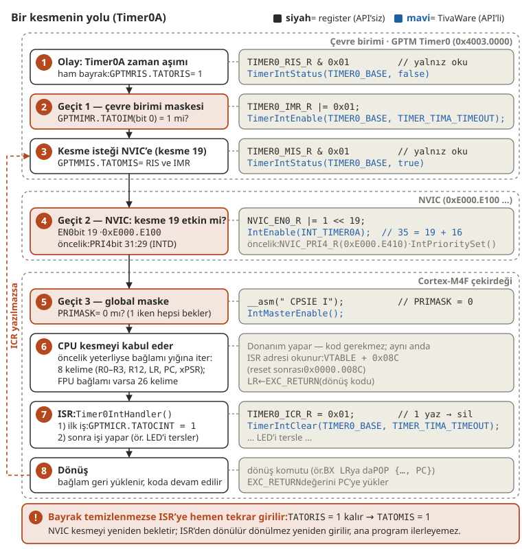
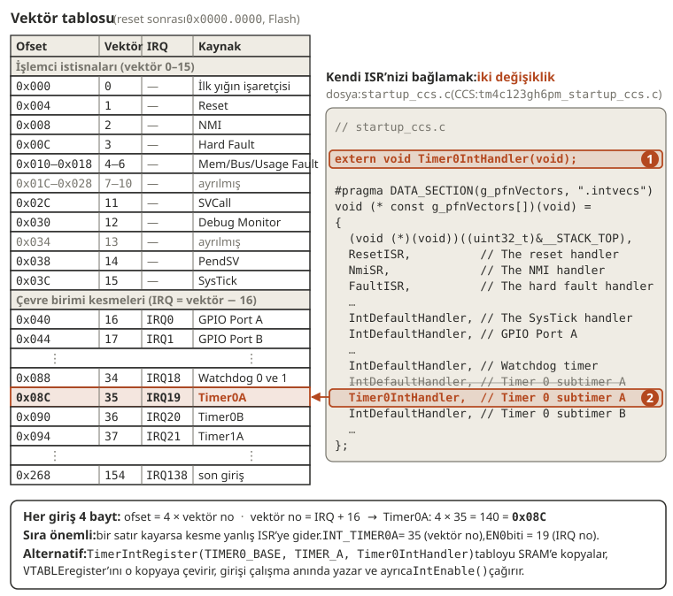
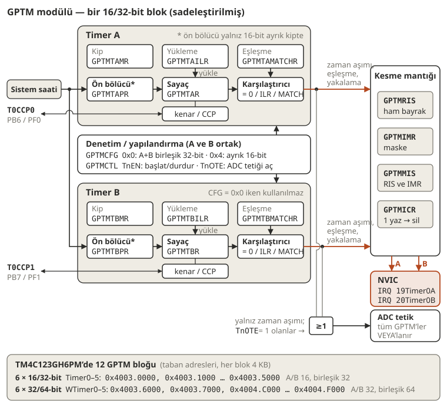
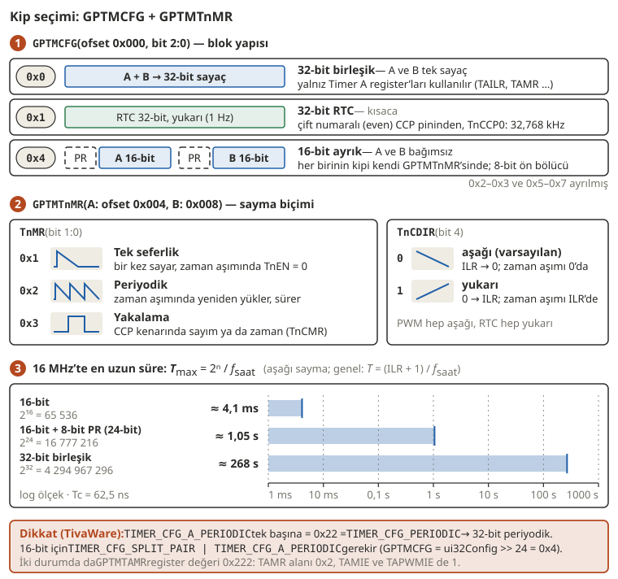
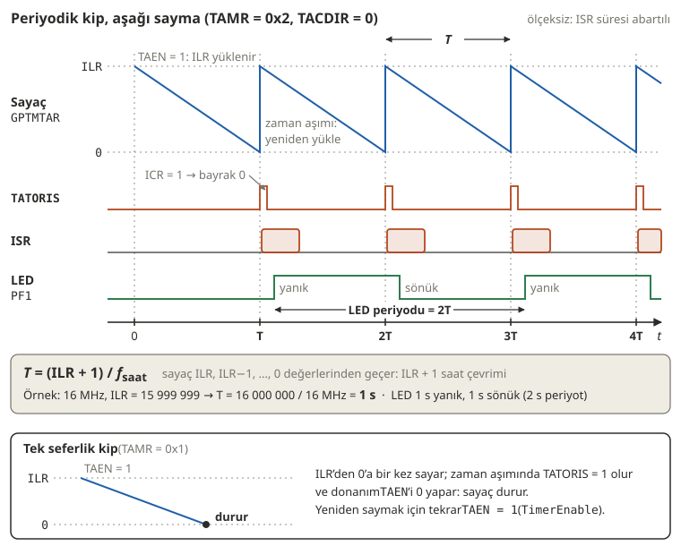
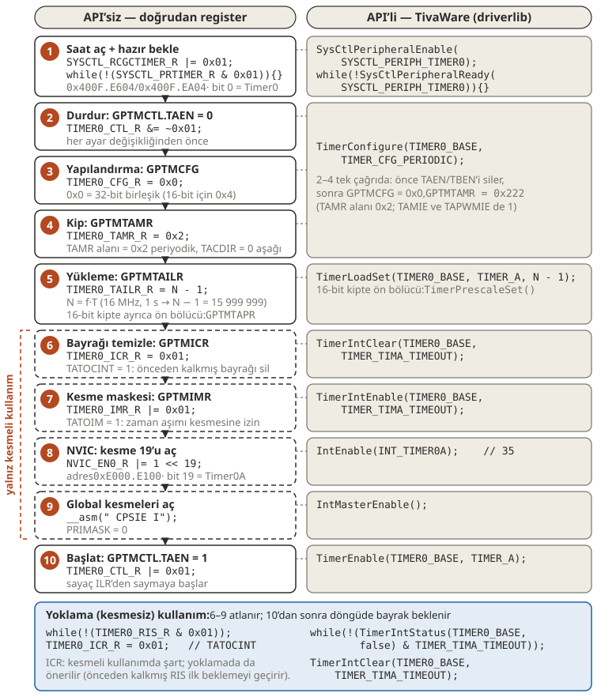

Zamanlayıcılar (GPTM) ve Kesmelere Giriş
GPIO notunda LED'i yakıp söndürürken süreyi boş bir döngüyle ayarladık. Bu notta aynı işi donanımdaki zamanlayıcılarla yapacağız: işlemci beklemek yerine başka işle uğraşırken zamanlayıcı süreyi kendisi ölçecek ve süre dolunca haber verecek. Bu haberi almanın en verimli yolu kesme olduğu için not, kesme altyapısıyla (NVIC, vektör tablosu, ISR) başlıyor.
Bu notun sonunda öğrenci:
- Yazılım gecikmesi (
SysCtlDelay, boş döngü) ile donanım zamanlayıcısı arasındaki farkı açıklayabilir; yoklama (polling) ile kesme yaklaşımlarını karşılaştırabilir. - Bir kesmenin yolunu (çevre birimi bayrağı → GPTMIMR → NVIC EN0 → PRIMASK → vektör tablosu → ISR) izleyebilir, kesme numarası ile vektör numarasını ayırt edebilir ve ISR'yi
startup_ccs.cdosyasındaki vektör tablosuna ekleyebilir. - Kısa, bayrağını en başta temizleyen ve paylaşılan değişkenleri
volatiletanımlayan bir kesme servis programı (ISR) yazabilir. - GPTM'nin yapısını (6 adet 16/32-bit, 6 adet 32/64-bit blok; Timer A/B), kiplerini (tek seferlik, periyodik, kenar sayma/zamanlama, PWM) ve temel register'larını açıklayabilir.
- Verilen saat frekansı ve süre için yükleme (ILR) ve gerekirse ön bölücü (PR) değerini hesaplayabilir; 16-bit sınırını bilir.
- Bir zamanlayıcıyı şu sırayla başlatabilir: RCGCTIMER (+ PRTIMER bekle) → TnEN = 0 (GPTMCTL) → GPTMCFG → GPTMTnMR → GPTMTnILR (+ GPTMTnPR) → GPTMICR temizle → GPTMIMR → NVIC EN0 → global kesme izni → TnEN = 1.
- Aynı uygulamayı doğrudan register erişimiyle ve TivaWare fonksiyonlarıyla (
TimerConfigure,TimerLoadSet,TimerIntEnable,IntEnable,IntMasterEnable…) yazabilir.
1. Neden zamanlayıcı?
GPIO notundaki örneklerde gecikme için ya boş bir for döngüsü ya da TivaWare'in SysCtlDelay(n) fonksiyonu kullanıldı. SysCtlDelay'in her turu 3 saat çevrimi sürer, yani süre ≈ 3·n / fsys olur (GPIO notu, TivaWare karşılıkları). Bu yöntem basittir ama üç önemli kusuru vardır:
- İşlemci meşgul kalır. Gecikme süresince CPU sadece sayar; buton okuyamaz, veri işleyemez.
- Süre kesin değildir. Boş döngünün süresi derleyiciye ve optimizasyon ayarına bağlıdır. Araya bir kesme girerse gecikme o kadar uzar.
- Birden çok zamanlama yönetilemez. Biri 0,5 s, diğeri 0,2 s aralıkla yanıp sönen iki LED'i tek bir gecikme döngüsüyle düzgün sürmek zordur.
Donanım zamanlayıcısı (timer), sistem saatiyle kendi kendine sayan bir sayaçtır. Yazılım sayacı bir kez kurar, sonra işine bakar. Sayaç belirlenen değere ulaştığında bir bayrak kalkar; yazılım bu bayrağı ya ara ara kontrol eder (yoklama) ya da bayrak bir kesme üreterek işlemciyi kendisi çağırır. Süre sistem saatinden türetilir ve işlemcinin o sırada ne yaptığından etkilenmez. Saat kristal + PLL'den geliyorsa (40 MHz örnekler) çok kesindir; varsayılan 16 MHz PIOSC'nin fabrika kalibrasyonuyla sapması gerilim ve sıcaklık aralığında ±%3'tür; kullanıcı yeniden kalibrasyon yaparsa o koşulda ±%1'e iner (datasheet s. 224, Tablo 24-15 s. 1375).
| Özellik | SysCtlDelay / boş döngü | Donanım zamanlayıcısı (GPTM) |
|---|---|---|
| CPU bekleme sırasında | Meşgul (sadece sayar) | Serbest; başka iş yapabilir ya da uyuyabilir |
| Süre doğruluğu | Derleyiciye, kesmelere bağlı | Saat frekansıyla belirlenir, çevrim düzeyinde kesin |
| Aynı anda birden çok süre | Zor | Her zamanlayıcı ayrı (TM4C123'te 12 blok, 24 sayaç) |
| Ek işlevler | Yok | Dış olay sayma, kenar zamanı yakalama, PWM, ADC tetikleme |
TM4C123GH6PM'de başka zamanlama kaynakları da vardır: Cortex-M4 çekirdeğindeki 24-bit SysTick sayacı (datasheet s. 123) ve PWM modüllerinin kendi sayaçları. Bu notun konusu genel amaçlı zamanlayıcı modülü GPTM'dir (General-Purpose Timer Module).
2. Kesmelere giriş
Zamanlayıcı örneklerinin yarısı kesmeli olduğu için önce kesme altyapısını kuralım. GPIO kesmeleri (buton kenarlarının algılanması) ayrı bir notta ayrıntılı işlenecek; burada yalnız tüm çevre birimleri için ortak olan mekanizmayı, kaynak örneği olarak Timer0A ile görüyoruz. Register düzeyindeki kurulum satırları Bölüm 6'dadır.
İstisna ve kesme
ARM terminolojisinde programın normal akışını kesen her olaya istisna (exception) denir. Bunlar iki gruba ayrılır (datasheet §2.5, s. 101–103):
- Sistem istisnaları (vektör no 1–15): Reset, NMI, Hard Fault, bellek/veri yolu/kullanım hataları, SVCall, PendSV, SysTick. Çekirdeğin kendisinden gelir.
- Kesmeler (IRQ, vektör no 16 ve üstü): Çevre birimlerinden (GPIO, UART, ADC, Timer…) gelen isteklerdir. TM4C123GH6PM'de 78 kesme kaynağı vardır.
Bir istisna kabul edildiğinde işlemci o anki işi bırakır, durumunu yığına (stack) kaydeder, ilgili kesme servis programını (ISR, Interrupt Service Routine) çalıştırır ve ISR bitince kaldığı yerden devam eder. Cortex-M4'te bu kaydetme ve geri yükleme donanımla yapılır: R0–R3, R12, LR, PC ve xPSR otomatik olarak yığına itilir (FPU bağlamı etkinse S0–S15 ve FPSCR de yığına alınır, datasheet s. 109–110); aynı anda ISR'nin adresi vektör tablosundan okunur. TI kitapçığına göre bu giriş 12 çevrim sürer; arka arkaya iki kesme varsa ikincisine "kuyruk zincirleme" (tail-chaining) ile 6 çevrimde geçilir. Sonuç olarak ISR, özel bir anahtar sözcük gerektirmeyen sıradan bir C fonksiyonudur: void Ad(void) biçiminde, parametresiz ve dönüş değersiz.
Yoklama (polling) ve kesme
Zamanlayıcının "süre doldu" bayrağını öğrenmenin iki yolu vardır:
while(1)
{
if (TIMER0_RIS_R & 0x01) // bayrak kalktı mı? (sürekli sor)
{
TIMER0_ICR_R = 0x01; // bayrağı temizle
GPIO_PORTF_DATA_R ^= 0x02;// işi yap
}
/* başka iş yapılabilir ama bayrağı sık sık kontrol etmek gerekir */
}void Timer0A_ISR(void) // donanım çağırır
{
TIMER0_ICR_R = 0x01; // bayrağı temizle
GPIO_PORTF_DATA_R ^= 0x02; // işi yap
}
while(1)
{
/* ana döngü tamamen serbest */
}Yoklamada CPU bayrağı kendisi sorar. Kurulumu basittir, ama döngü başka bir işte uzun süre kalırsa olay geç fark edilir. Kesmede ise olay olduğu anda donanım ISR'yi çağırır; tepki süresi kısadır ve ana döngü olayı beklemek zorunda değildir. Bunun bedeli birkaç ek ayar (çevre birimi maskesi, NVIC, vektör tablosu) ve ISR yazarken dikkat edilmesi gereken kurallardır.
NVIC ve bir kesmenin yolu
Cortex-M4'teki kesme denetleyicisine NVIC (Nested Vectored Interrupt Controller, iç içe vektörlü kesme denetleyicisi) denir. "İç içe" (nested) çünkü yüksek öncelikli bir kesme düşük öncelikli bir ISR'yi kesebilir; "vektörlü" (vectored) çünkü her kaynağın ISR adresi doğrudan tablodan alınır, ortak bir dağıtıcı fonksiyona gerek kalmaz. Bir zamanlayıcı olayı önce bir bayrak kaldırır; bu bayrağın ISR'ye ulaşması için yol üzerindeki üç geçidin (GPTMIMR, NVIC EN0, PRIMASK) de açık olması gerekir (Şekil 1):

IntMasterEnable) → CPU vektör tablosundan ISR adresini alır → ISR önce bayrağı GPTMICR ile temizler, sonra işini yapar (ör. LED'i tersler) → dönüş. Yanında karşılık gelen TivaWare çağrıları.Olay ve ham bayrak: Sayaç sıfıra ulaşınca GPTMRIS register'ının TATORIS biti (bit0) 1 olur. Bu bit geçitler kapalı olsa bile kalkar; yoklama bu biti okur. Bayrak register'larının ayrıntısı aşağıdadır. Ardından üç geçit gelir:
- Geçit 1, çevre birimi maskesi: GPTMIMR'nin TATOIM biti (bit0) 1 ise olay kesme isteğine dönüşür ve GPTMMIS'te (maskeli durum) de görünür. TivaWare:
TimerIntEnable(TIMER0_BASE, TIMER_TIMA_TIMEOUT). - Geçit 2, NVIC: Timer0A'nın kesme numarası 19'dur; NVIC'in EN0 register'ının (0xE000E100) bit19'u 1 olmalıdır. TivaWare:
IntEnable(INT_TIMER0A). - Geçit 3, global maske: Çekirdekteki PRIMASK biti 0 olmalıdır. PRIMASK = 1 iken (Reset, NMI ve Hard Fault dışında) hiçbir istisna kabul edilmez. TivaWare:
IntMasterEnable(), bu daCPSIE Ikomutunu çalıştırır. PRIMASK'ın açılış değeri 0'dır, yani kesmeler açılışta genel olarak açıktır (datasheet s. 85). Bu yüzden API'siz örneklerde bu adım çoğu zaman yazılmaz; ama kodun bir yerindeIntMasterDisable()/CPSID Iile kesmeler kapatıldıysa, bu geçit yeniden açılmadıkça hiçbir kesme gelmez.
Üç geçit de açıksa CPU, vektör tablosunun 35 numaralı girişinden (ofset 0x08C) ISR adresini alır ve ISR'ye dallanır. ISR'nin ilk işi kaynağın bayrağını GPTMICR'ye 1 yazarak temizlemektir. Temizlenmezse ISR'den döner dönmez aynı kesme yeniden gelir.
Vektör tablosu ve startup dosyası
Vektör tablosu, her istisna için ISR'nin başlangıç adresini tutan 32-bit'lik bir dizidir. Açılışta 0x0000.0000 adresindedir (datasheet s. 106–107). İlk eleman yığın işaretçisinin başlangıç değeri, ikincisi Reset ISR'sinin adresidir; sonra sistem istisnaları ve çevre birimi kesmeleri gelir (Şekil 2). Her giriş 4 bayt olduğu için:
vektör no = kesme no + 16 · ofset = 4 × vektör no · Timer0A: 19 + 16 = 35, 4 × 35 = 140 = 0x08C

startup_ccs.c içindeki g_pfnVectors dizisinde IntDefaultHandler yerine ISR adı yazılır ve dosyanın başına extern void Timer0IntHandler(void); bildirimi eklenir (aşağıdaki bb3 örneğinde ISR'nin adı timer0akesmesi).| Kaynak | Kesme no (EN biti) | Vektör no | Ofset | TivaWare sabiti |
|---|---|---|---|---|
| İlk yığın işaretçisi (SP) | – | 0 | 0x000 | – |
| Reset | – | 1 | 0x004 | – |
| NMI / Hard Fault | – | 2 / 3 | 0x008 / 0x00C | FAULT_NMI / FAULT_HARD |
| SysTick | – | 15 | 0x03C | FAULT_SYSTICK |
| GPIO Port A | 0 (EN0 bit0) | 16 | 0x040 | INT_GPIOA |
| 16/32-bit Timer 0A | 19 (EN0 bit19) | 35 | 0x08C | INT_TIMER0A |
| 16/32-bit Timer 0B | 20 (EN0 bit20) | 36 | 0x090 | INT_TIMER0B |
| 16/32-bit Timer 1A | 21 (EN0 bit21) | 37 | 0x094 | INT_TIMER1A |
| 16/32-bit Timer 2A | 23 (EN0 bit23) | 39 | 0x09C | INT_TIMER2A |
| GPIO Port F | 30 (EN0 bit30) | 46 | 0x0B8 | INT_GPIOF |
| 16/32-bit Timer 3A | 35 (EN1 bit3) | 51 | 0x0CC | INT_TIMER3A |
| 32/64-bit Wide Timer 0A | 94 (EN2 bit30) | 110 | 0x1B8 | INT_WTIMER0A |
Değerler datasheet Tablo 2-8 ve 2-9'dan (s. 103–104) alınmıştır. Dikkat: NVIC register'larında bit konumu olarak kesme numarası (19), TivaWare'in INT_TIMER0A sabitinde ise vektör numarası (35) kullanılır. IntEnable(INT_TIMER0A) içeride 35 − 16 = 19 hesabını kendisi yapar; elle yazarken NVIC_EN0_R = 1 << 19; yazılır, 1 << 35 değil.
Yöntem 1: ISR'yi startup dosyasına yazmak (statik)
CCS projesindeki tm4c123gh6pm_startup_ccs.c (TI kitapçığında kısaca startup_ccs.c) dosyası vektör tablosunu g_pfnVectors adlı bir dizi olarak tanımlar. Bu dizi bağlayıcı (linker) komut dosyasıyla flash'ın 0x0000.0000 adresine yerleştirilir. Kullanılmayan bütün girişlerde IntDefaultHandler yazar; bu fonksiyon sonsuz bir döngüdür. Kendi ISR'mizi bağlamak için iki değişiklik yapılır (derste kullanılan bb3 projesinden):
extern void _c_int00(void);
extern void timer0akesmesi(void); // (1) EKLENDİ: ISR başka dosyada tanımlı
#pragma DATA_SECTION(g_pfnVectors, ".intvecs") // tablo flash'ta 0x0000.0000'a yerleşir
void (* const g_pfnVectors[])(void) =
{
(void (*)(void))((uint32_t)&__STACK_TOP), // vektör 0, 0x000: ilk yığın işaretçisi
ResetISR, // vektör 1, 0x004: Reset
NmiSR, // vektör 2, 0x008: NMI
FaultISR, // vektör 3, 0x00C: Hard Fault
/* ... sistem istisnaları ve kesme 0-17 ... */
IntDefaultHandler, // vektör 34, 0x088: Watchdog timer (kesme 18)
timer0akesmesi, // vektör 35, 0x08C: Timer 0 subtimer A (kesme 19) (2) DEĞİŞTİ
IntDefaultHandler, // vektör 36, 0x090: Timer 0 subtimer B (kesme 20)
/* ... */
};Girişin yeri yorum satırındaki adla ("Timer 0 subtimer A") bulunur. Satır sayarak bulmaya çalışmak hataya açıktır; bir satır kayarsa ISR başka bir kesmeye bağlanır. ISR adı startup dosyasında extern ile bildirilmezse derleyici adı tanımaz ve derleme hata verir.
Yöntem 2: ISR'yi çalışma anında kaydetmek (dinamik)
TivaWare'in TimerIntRegister(TIMER0_BASE, TIMER_A, Fonksiyon) çağrısı startup dosyasına dokunmadan aynı işi yapar. İçeride IntRegister() fonksiyonu flash'taki tabloyu SRAM'deki g_pfnRAMVectors dizisine kopyalar, NVIC'in VTABLE register'ını (0xE000ED08, s. 163) bu RAM tablosunu gösterecek şekilde değiştirir ve 35. girişe verilen fonksiyonu yazar. TimerIntRegister ardından IntEnable(INT_TIMER0A)'yı da çağırır. RAM tablosu 1 KB sınırına hizalı olmalıdır; ders projelerinin tm4c123gh6pm.cmd dosyasında bunun için .vtable : > 0x20000000 satırı vardır.
İkisi de doğrudur. Ders kodlarındaki API'li örnekler (hafta06TimerKesmeliApili, bb4, drive_2017_timer) ikinci yolu, API'siz bb3 örneği ve TI Lab 4 ise birinci yolu kullanır. Statik yol flash'ta kalır ve RAM harcamaz; dinamik yol esnektir ama tabloya 155 × 4 bayt RAM ayırır ve tablo SRAM'den okunduğu için kesme tepkisine küçük bir ek gecikme getirir (SPMU298E s. 353). Hiçbiri yapılmazsa kesme geldiğinde işlemci IntDefaultHandler'daki sonsuz döngüye düşer ve program "donmuş" görünür.
Kesme bayrağı ve temizleme
Tüm çevre birimlerinde aynı düzen vardır: bir olay için dört register görevi paylaşır. Kaynak örneği olarak Timer0A (ofsetler ve bit adları Bölüm 4'te):
| Register | Görev | Timer0A zaman aşımı için |
|---|---|---|
| RIS (Raw Interrupt Status) | Ham durum: olay olduysa bit 1'dir, maske ne olursa olsun. Yoklama bunu okur. | GPTMRIS.TATORIS |
| IMR (Interrupt Mask) | Geçit 1: 1 olan bitlerin olayı kesme isteğine dönüşür. | GPTMIMR.TATOIM |
| MIS (Masked Interrupt Status) | RIS AND IMR: kesmeye yol açan kaynak. ISR'de "hangi olay geldi?" sorusu buradan cevaplanır. | GPTMMIS.TATOMIS |
| ICR (Interrupt Clear) | W1C (write-1-to-clear): bir bite 1 yazmak RIS ve MIS'teki aynı biti 0 yapar; 0 yazmanın etkisi yoktur. | GPTMICR.TATOCINT |
Bayrak donanım tarafından otomatik silinmez (datasheet s. 709). Bu yüzden TIMER0_ICR_R = 0x01; (ya da TimerIntClear(TIMER0_BASE, TIMER_TIMA_TIMEOUT);) satırı hem yoklamada hem ISR'de zorunludur. Ders örneklerinde TIMER0_ICR_R |= 0x01; yazımı da görülür. W1C register'ını okumak datasheet'e göre anlamlı bir değer döndürmez (register türleri, s. 43). |= önce okuyup sonra yazdığı için okunan değerdeki başka bitler de yazılabilir ve istenmeyen bayraklar silinebilir. Ders kodlarındaki tek bayraklı örneklerde sorun görülmez, ama doğru yazım ='dir; TivaWare de = kullanır.
Öncelik
Her kesmenin 3 bitlik bir öncelik seviyesi vardır: 0 en yüksek, 7 en düşük. Açılışta hepsi 0'dır. Aynı anda iki kesme bekliyorsa önce önceliği yüksek olan, öncelikler eşitse numarası küçük olan çalışır. Bir ISR çalışırken daha yüksek öncelikli bir kesme gelirse çalışan ISR kesilir (iç içe kesme); eşit ya da düşük öncelikli olan bekler (datasheet s. 107–108).
Öncelikler NVIC'in PRIn register'larında tutulur; her register dört kesmenin önceliğini taşır ve kesme k için alan PRI(k/4) register'ındadır (s. 152). Timer0A (kesme 19 = 4·4 + 3) için PRI4'ün (0xE000E410) bit31:29 alanı kullanılır:
NVIC_PRI4_R = (NVIC_PRI4_R & 0x1FFFFFFF) // bit31:29'u temizle
| (2 << 29); // Timer0A önceliği = 2IntPrioritySet(INT_TIMER0A, 0x40); // üst 3 bit anlamlı: 2 << 5 = 0x40Tek kesmeli uygulamalarda öncelik ayarına gerek yoktur. İki zamanlayıcı ya da zamanlayıcı + buton kesmesi birlikte kullanıldığında hangisinin bekleyebileceğine göre öncelik verilir.
ISR yazma kuralları
- Kısa tutun. ISR çalışırken eşit ve düşük öncelikli kesmeler bekler. ISR içinde
SysCtlDelay, uzun döngü ya da bir butonun bırakılmasını bekleme gibi işler yapılmaz. Uzun iş gerekiyorsa ISR yalnız bir bayrak kaldırır, işi ana döngü yapar. - Bayrağı temizleyin, mümkünse en başta. Cortex-M'de yazmalar bir yazma tamponundan geçer; GPTMICR'ye yapılan yazmanın NVIC'e ulaşması birkaç çevrim sürebilir. Temizleme ISR'nin son satırıysa ISR, NVIC hâlâ isteği görürken bitebilir ve ISR gereksiz yere bir kez daha çalışır. Datasheet (s. 101) iki çözüm verir: bayrağı ISR'nin başında temizlemek ya da temizledikten sonra, dönmeden önce bir okuma veya yazma daha yapmak. TivaWare kılavuzu (
TimerIntClearaçıklaması) bayrağı ISR'nin başında temizlemeyi önerir. - Paylaşılan değişkenleri
volatiletanımlayın. ISR'nin değiştirip ana döngünün okuduğu (ya da tersi) global değişkenlervolatileolmalıdır. Aksi halde derleyici, ana döngüdeki değişkenin "hiç değişmediğini" varsayıp değerini bir yazmaçta tutabilir ve ISR'nin yaptığı değişikliği hiç görmez. - Paylaşılan veriye dikkat edin. Ana döngü bir değişkeni oku-değiştir-yaz ile güncellerken araya ISR girip aynı değişkeni değiştirirse güncelleme kaybolabilir. Kısa kritik bölgeler
IntMasterDisable()…IntMasterEnable()arasına alınabilir. - Birden çok kaynak varsa MIS'i okuyun. Aynı ISR hem zaman aşımı hem eşleşme olayına bağlıysa
TimerIntStatus(base, true)(GPTMMIS) ile hangisinin geldiğine bakılır ve yalnız gelen bayrak temizlenir. - İmza
void Ad(void)olmalıdır. ISR'ye parametre geçirilemez, ISR değer döndüremez; iletişim global (volatile) değişkenlerle kurulur.
3. GPTM modülü
Yapı: 16/32 ve 32/64-bit bloklar
TM4C123GH6PM'nin GPTM modülünde 6 adet 16/32-bit (Timer0–Timer5) ve 6 adet 32/64-bit "wide" (WTimer0–WTimer5) blok vardır (datasheet s. 704). Her blokta Timer A ve Timer B adlı iki sayaç bulunur (Şekil 3):
- 16/32-bit blok: A ve B ayrı ayrı (ayrık, split) kullanılırsa her biri 16-bit sayaçtır ve 8-bit ön bölücü kullanabilir. Birleştirilirse (concatenated) tek bir 32-bit sayaç olur; bu durumda yalnız Timer A'nın register'ları kullanılır ve ön bölücü yoktur.
- 32/64-bit wide blok: Ayrık kipte her biri 32-bit (16-bit ön bölücülü), birleşik kipte tek bir 64-bit sayaç.

Şekil 3'teki parçaların görevleri:
- Saat girişi: Periyodik ve tek seferlik kiplerde sayaç sistem saatiyle sayar. Kenar sayma/zamanlama kiplerinde ise sayacı CCP pinindeki dış sinyalin kenarları ilerletir.
- Yükleme register'ı (GPTMTnILR): Aşağı saymada başlangıç değeri, yukarı saymada üst sınırdır.
- Ön bölücü (GPTMTnPR): Yalnız ayrık kipte; aşağı sayan periyodik/tek seferlik kipte gerçek bir frekans bölücü gibi çalışır (Bölüm 5).
- Eşleşme (GPTMTnMATCHR): Sayaç bu değere eşit olunca ek bir olay (eşleşme kesmesi, PWM kenarı) üretilir.
- Kesme çıkışı: Zaman aşımı, eşleşme ve yakalama olayları GPTMRIS/IMR/MIS/ICR üzerinden NVIC'e gider. Her blokta A ve B'nin ayrı kesme hatları vardır (Timer0A = 19, Timer0B = 20).
- CCP pinleri (Capture/Compare/PWM): Her sayacın bir pini vardır; dış olay girişi ya da PWM çıkışı olarak kullanılır. Örn. PF4 = T2CCP0 (Timer2 A), PB6 = T0CCP0 (Timer0 A), PF1 = T0CCP1, PF2 = T1CCP0, PF3 = T1CCP1 (datasheet Tablo 11-2, s. 706–707).
- ADC tetikleme: Zaman aşımında ADC örneklemesi başlatılabilir (GPTMCTL.TnOTE). Tüm zamanlayıcıların tetik sinyalleri ADC'ye VEYA'lanarak gittiği için bu iş için tek bir zamanlayıcı kullanılmalıdır.
Kipler ve kip seçimi
Bir zamanlayıcının nasıl çalışacağını iki register belirler (Şekil 4): blok düzeyinde GPTMCFG (32-bit birleşik mi, 16-bit ayrık mı?) ve her sayaç için GPTMTnMR (hangi kip, hangi yön?).

| GPTMCFG | 16/32-bit blokta anlamı | 32/64-bit blokta anlamı |
|---|---|---|
0x0 | 32-bit zamanlayıcı (A ve B birleşik) | 64-bit zamanlayıcı |
0x1 | 32-bit gerçek zaman saati (RTC, 32,768 kHz girişle) | 64-bit RTC |
0x4 | 16-bit zamanlayıcılar (A ve B ayrık) | 32-bit zamanlayıcılar |
GPTMTnMR'nin TnMR alanı (bit1:0) ve ilgili bitleri:
| Kip | TnMR | Diğer bitler | Kullanım |
|---|---|---|---|
| Tek seferlik (one-shot) | 0x1 | TnCDIR | Bir kez sayar, zaman aşımında durur ve TnEN'i kendisi 0 yapar. Gecikme, zaman aşımı denetimi. |
| Periyodik (periodic) | 0x2 | TnCDIR | Zaman aşımında yeniden yüklenip saymaya devam eder. Düzenli aralıkla olay üretme (LED yakıp söndürme, örnekleme). |
| Kenar sayma (edge-count) | 0x3 | TnCMR = 0 | CCP pinindeki kenarları sayar (yalnız ayrık kip). |
| Kenar zamanlama (edge-time) | 0x3 | TnCMR = 1 | Kenar anındaki sayaç değerini yakalar; periyot/darbe genişliği ölçme. |
| PWM | 0x1 / 0x2 | TnAMS = 1, TnCMR = 0 | CCP pininden PWM çıkışı (yalnız ayrık kip, aşağı sayma). |
Sayma yönü: TnCDIR (bit4) = 0 ise sayaç ILR'den 0'a aşağı, 1 ise 0'dan ILR'ye yukarı sayar. Zaman aşımı olayı aşağı saymada 0'a ulaşınca, yukarı saymada ILR değerine ulaşınca oluşur (s. 709). Bu notun örneklerinin çoğu aşağı sayan periyodik kipi kullanır.
4. Register'lar ve taban adresler
Taban adresler ve saat register'ları
Her blok kendi 4 KB'lık adres penceresine sahiptir; register adresi taban + ofset olarak hesaplanır (datasheet §11.5, s. 725). TivaWare'deki adlar inc/hw_memmap.h dosyasındadır.
| Blok | Taban adres | TivaWare adı | Blok | Taban adres | TivaWare adı |
|---|---|---|---|---|---|
| 16/32-bit Timer 0 | 0x40030000 | TIMER0_BASE | 32/64-bit Wide Timer 0 | 0x40036000 | WTIMER0_BASE |
| 16/32-bit Timer 1 | 0x40031000 | TIMER1_BASE | 32/64-bit Wide Timer 1 | 0x40037000 | WTIMER1_BASE |
| 16/32-bit Timer 2 | 0x40032000 | TIMER2_BASE | 32/64-bit Wide Timer 2 | 0x4004C000 | WTIMER2_BASE |
| 16/32-bit Timer 3 | 0x40033000 | TIMER3_BASE | 32/64-bit Wide Timer 3 | 0x4004D000 | WTIMER3_BASE |
| 16/32-bit Timer 4 | 0x40034000 | TIMER4_BASE | 32/64-bit Wide Timer 4 | 0x4004E000 | WTIMER4_BASE |
| 16/32-bit Timer 5 | 0x40035000 | TIMER5_BASE | 32/64-bit Wide Timer 5 | 0x4004F000 | WTIMER5_BASE |
Saat kapısı ve hazır durumu Sistem Kontrol (SYSCTL) bloğundadır:
| Register | Adres | Görev | Datasheet |
|---|---|---|---|
| RCGCTIMER | 0x400FE604 (SYSCTL + 0x604) | 16/32-bit blokların saatini açar: bit0 = Timer0 … bit5 = Timer5. | s. 338 |
| RCGCWTIMER | 0x400FE65C (SYSCTL + 0x65C) | Wide blokların saatini açar: bit0 = WTimer0 … bit5 = WTimer5. | s. 357 |
| PRTIMER | 0x400FEA04 (SYSCTL + 0xA04) | Salt okunur; bit = 1 ise Timer bloğu erişime hazır. | s. 404 |
| PRWTIMER | 0x400FEA5C (SYSCTL + 0xA5C) | Wide bloklar için hazır durumu. | s. 423 |
Datasheet, saat açıldıktan sonra Timer register'larına erişmeden önce 3 sistem saati beklenmesini ister (s. 725). Saati kapalı bir bloğun register'ına erişmek bus fault üretir (s. 338). Bus fault istisnası açılışta etkin olmadığından hard fault'a yükselir ve CCS'in startup dosyasındaki FaultISR'ye (sonsuz döngü) düşülür.
GPTM register tablosu
Ofsetler blok taban adresine eklenir (datasheet Tablo 11-12, s. 726). Birleşik (32-bit) kipte yalnız Timer A register'ları kullanılır.
| Register | Ofset | Görev | tm4c123gh6pm.h (Timer0) | Datasheet |
|---|---|---|---|---|
| GPTMCFG | 0x000 | Blok yapılandırması: 0x0 = 32-bit, 0x1 = RTC, 0x4 = 16-bit. Yalnız TAEN = TBEN = 0 iken değiştirilir. | TIMER0_CFG_R | s. 727 |
| GPTMTAMR | 0x004 | Timer A kipi: TAMR (bit1:0), TACMR, TAAMS, TACDIR, TAMIE… Yalnız TAEN = 0 iken değiştirilir. | TIMER0_TAMR_R | s. 729 |
| GPTMTBMR | 0x008 | Timer B kipi (birleşik kipte yok sayılır). | TIMER0_TBMR_R | s. 733 |
| GPTMCTL | 0x00C | Denetim: TAEN/TBEN (çalıştır), TnEVENT (kenar türü), TnSTALL, TnOTE (ADC tetik). | TIMER0_CTL_R | s. 737 |
| GPTMIMR | 0x018 | Kesme maskesi: 1 olan olay kesme üretir. | TIMER0_IMR_R | s. 745 |
| GPTMRIS | 0x01C | Ham kesme durumu (salt okunur). | TIMER0_RIS_R | s. 748 |
| GPTMMIS | 0x020 | Maskeli kesme durumu (salt okunur). | TIMER0_MIS_R | s. 751 |
| GPTMICR | 0x024 | Kesme temizleme (1 yaz → temizle). | TIMER0_ICR_R | s. 754 |
| GPTMTAILR | 0x028 | Timer A yükleme değeri (aşağı saymada başlangıç, yukarı saymada üst sınır). 16-bit kipte üst 16 bit yok sayılır. | TIMER0_TAILR_R | s. 756 |
| GPTMTBILR | 0x02C | Timer B yükleme değeri. | TIMER0_TBILR_R | s. 757 |
| GPTMTAMATCHR | 0x030 | Timer A eşleşme değeri. | TIMER0_TAMATCHR_R | s. 758 |
| GPTMTAPR | 0x038 | Timer A ön bölücüsü (16/32-bit blokta 8 bit; yalnız ayrık kipte). | TIMER0_TAPR_R | s. 760 |
| GPTMTBPR | 0x03C | Timer B ön bölücüsü. | TIMER0_TBPR_R | s. 761 |
| GPTMTAR | 0x048 | Timer A değeri (salt okunur): periyodik kipte o anki sayım, yakalama kiplerinde yakalanan değer/sayılan kenar. | TIMER0_TAR_R | s. 764 |
| GPTMTAV | 0x050 | Timer A serbest çalışan sayaç değeri (yazılabilir). | TIMER0_TAV_R | s. 766 |
Sık kullanılan bitler
| Register | Bit | Ad | Anlamı |
|---|---|---|---|
| GPTMCTL | bit0 | TAEN | 1 = Timer A çalışır. Ayar yapılırken 0 olmalı. |
| bit1 | TASTALL | 1 = hata ayıklayıcı CPU'yu durdurunca sayaç da durur. | |
| bit3:2 | TAEVENT | Yakalama kiplerinde kenar: 0x0 yükselen, 0x1 düşen, 0x3 her iki kenar. | |
| bit8 | TBEN | 1 = Timer B çalışır. | |
| GPTMTAMR | bit1:0 | TAMR | 0x1 tek seferlik, 0x2 periyodik, 0x3 yakalama. |
| bit2 | TACMR | Yakalama türü: 0 kenar sayma, 1 kenar zamanlama. | |
| bit3 | TAAMS | 1 = PWM kipi. | |
| bit4 | TACDIR | 0 = aşağı say, 1 = yukarı say. | |
| bit5 | TAMIE | 1 = periyodik/tek seferlik kipte eşleşme kesmesi etkin. Bu bit 0 iken TAMRIS hiç kalkmaz (s. 710). | |
| GPTMIMR / RIS / MIS / ICR | bit0 | TATO… | Timer A zaman aşımı (IMR: TATOIM, RIS: TATORIS, ICR: TATOCINT). TivaWare: TIMER_TIMA_TIMEOUT. |
| bit1 | CAM… | Timer A yakalama kipi eşleşmesi (kenar sayma). TIMER_CAPA_MATCH. | |
| bit2 | CAE… | Timer A yakalama kipi olayı (kenar zamanlama). TIMER_CAPA_EVENT. | |
| bit4 | TAM… | Timer A eşleşmesi (periyodik/tek seferlik). TIMER_TIMA_MATCH. | |
| bit8 | TBTO… | Timer B zaman aşımı. TIMER_TIMB_TIMEOUT. |
NVIC register'ları çekirdek çevre birimleri bölgesindedir (taban 0xE000E000, datasheet Tablo 3-8, s. 134): EN0 0xE000E100 (kesme 0–31 izin, s. 142), EN1 0xE000E104 (kesme 32–63), DIS0 0xE000E180, PRI4 0xE000E410 (kesme 16–19 önceliği, s. 152), VTABLE 0xE000ED08 (s. 163).
5. Süre hesabı
Saat frekansı
Periyodik ve tek seferlik kiplerde sayaç sistem saatiyle sayar; bu yüzden ilk iş saat frekansını bilmektir.
- 16 MHz (varsayılan):
SysCtlClockSetçağrılmazsa işlemci iç hassas osilatörden (PIOSC) çalışır ve f = 16 MHz olur (datasheet RCC, s. 254). Derste kullanılan API'siz örneklerin hepsi bu frekansı varsayar. - 40 MHz: Ders kodlarındaki API'li örneklerin tamamı ve TI Lab 4
SysCtlClockSet(SYSCTL_SYSDIV_5|SYSCTL_USE_PLL|SYSCTL_XTAL_16MHZ|SYSCTL_OSC_MAIN)çağırır: 16 MHz kristal → 400 MHz PLL → sabit /2 → /5 = 40 MHz.SysCtlClockGet()bu durumda 40 000 000 döndürür.
Yükleme değeri: ILR = f·T − 1
Aşağı sayan periyodik kipte sayaç ILR, ILR−1, …, 1, 0 değerlerinden geçer ve 0'dan sonraki çevrimde yeniden ILR yüklenir (datasheet s. 709). Bir periyotta ILR + 1 saat çevrimi vardır:
T = (ILR + 1) / f ⇒ ILR = f · T − 1
TI kitapçığı da Lab 4'te "kesme sıfırda geldiği için periyottan bir çıkarılır" der. TimerLoadSet(base, TIMER_A, değer) fonksiyonu verilen değeri olduğu gibi GPTMTnILR'ye yazar (driverlib/timer.c); −1 işlemini yapmaz, bunu programcı yapmalıdır. Ders örneklerinin bazılarında TimerLoadSet(..., SysCtlClockGet()) ya da TIMER0_TAILR_R = 0x00F42400 (16 000 000) yazılmıştır; periyot 1 çevrim uzun olur (40 MHz'te 25 ns, 16 MHz'te 62,5 ns). LED için fark edilmez, ama hassas zamanlamada ve sınav sorularında −1 unutulmamalıdır.
| f | İstenen T | f·T | ILR (ondalık) | ILR (onaltılık) | Kip |
|---|---|---|---|---|---|
| 16 MHz | 1 s | 16 000 000 | 15 999 999 | 0x00F423FF | 32-bit |
| 16 MHz | 1 ms | 16 000 | 15 999 | 0x3E7F | 16-bit yeter |
| 40 MHz | 1 s | 40 000 000 | 39 999 999 | 0x026259FF | 32-bit |
| 40 MHz | 50 ms (Lab 4) | 2 000 000 | 1 999 999 | 0x001E847F | 32-bit |
| 40 MHz | 1,25 ms | 50 000 | 49 999 | 0xC34F | 16-bit yeter |
32-bit kipte en uzun periyot 232 / f'dir: 16 MHz'te ≈ 268,4 s, 40 MHz'te ≈ 107,4 s. Daha uzun süreler için ISR'de yazılımla sayılır ya da 64-bit wide zamanlayıcı kullanılır.
16-bit sınırı ve ön bölücü
16-bit (ayrık) kipte GPTMTnILR'nin yalnız alt 16 biti geçerlidir; üst 16 bit yok sayılır (s. 756). En büyük yükleme değeri 65 535'tir, yani ön bölücüsüz en uzun periyot 65 536 / f olur: 16 MHz'te 4,096 ms, 40 MHz'te 1,6384 ms. Daha büyük bir değer yazılırsa hata vermez, sessizce kesilir: TimerLoadSet(..., 100000) 16-bit kipte 100 000 & 0xFFFF = 34 464 olarak çalışır.
Süreyi uzatmanın iki yolu vardır:
- Yazılımla saymak: Kısa periyotlu zamanlayıcının her zaman aşımında bir sayaç artırılır, belirli bir sayıya ulaşınca iş yapılır. Ders kodlarındaki 16-bit örneklerin hepsi bu yolu kullanır (7.4): 16 MHz'te 50 000 çevrim × 320 = 1 s.
- Ön bölücü (prescaler): GPTMTnPR register'ına 0–255 arası bir değer yazılır. Datasheet'e göre aşağı sayan periyodik ve tek seferlik kiplerde ön bölücü gerçek bir frekans bölücü gibi davranır: kendi içinde PR'den 0'a sayar ve her turda ana sayaç bir adım ilerler (s. 707, s. 760). Yukarı saymada ve yakalama/PWM kiplerinde ise ön bölücü sayacın üst 8 bitini tutan bir uzantıdır (24-bit sayaç).
Aşağı sayan periyodik kipte ön bölücüyle periyot şöyle olur (datasheet Tablo 11-5, s. 710 ile uyumlu):
T = (PR + 1) · (ILR + 1) / f (PR ≤ 255, ILR ≤ 65 535)
En uzun periyot 256 · 65 536 / f = 224 / f'dir: 16 MHz'te ≈ 1,049 s, 40 MHz'te ≈ 0,419 s. Hesap yöntemi: N = f·T bulunur. N ≤ 65 536 ise PR = 0, ILR = N − 1. Değilse PR + 1 ≥ N / 65 536 olacak şekilde, N'yi tam bölen bir değer seçilir; ILR = N / (PR + 1) − 1.
| f | T | N = f·T | PR + 1 | ILR + 1 | Yazılacak değerler |
|---|---|---|---|---|---|
| 16 MHz | 1 s | 16 000 000 | 250 | 64 000 | PR = 249, ILR = 63 999 |
| 40 MHz | 0,25 s | 10 000 000 | 250 | 40 000 | PR = 249, ILR = 39 999 |
| 40 MHz | 0,1 s | 4 000 000 | 64 | 62 500 | PR = 63, ILR = 62 499 |
| 40 MHz | 0,5 s | 20 000 000 | 224 = 16 777 216'dan büyük: 16-bit kipte yapılamaz; 32-bit kip ya da yazılım sayacı gerekir. | ||
Ön bölücü yalnız ayrık kipte (GPTMCFG = 0x4) vardır; 32-bit birleşik kipte GPTMTnPR kullanılmaz. TivaWare'de karşılığı TimerPrescaleSet(base, TIMER_A, PR)'dir.
Zaman diyagramı

Şekil 5'te dikkat edilecek noktalar:
- Sayaç TnEN = 1 yapıldığı anda ILR değerinden başlar (s. 709, Tablo 11-4).
- TATORIS bayrağı sıfır anında kalkar ve yazılım temizleyene kadar 1 kalır. Yoklamada bayrağın ne kadar geç fark edildiği ana döngünün hızına, kesmede ise yalnız kesme gecikmesine bağlıdır.
- LED her zaman aşımında terslendiği için LED'in yanıp sönme periyodu zamanlayıcı periyodunun iki katıdır. Lab 4'te 10 Hz yanıp sönme için zamanlayıcı 20 Hz'e (50 ms) kurulur.
- Periyodik kipte sayaç ISR'den bağımsız olarak saymaya devam eder; ISR'nin ne kadar sürdüğü periyodu kaydırmaz (ISR periyottan kısa olduğu sürece).
- Tek seferlik kipte zaman aşımından sonra sayaç durur ve donanım TnEN'i 0 yapar; yeniden saymak için TnEN tekrar 1 yapılır.
6. Başlatma adımları
Datasheet §11.4 (s. 722–723), tek seferlik ve periyodik kip için bir başlatma sırası verir. Kesmeli kullanım için NVIC bölümündeki adımlar (§2.5, §3) bu sıraya eklenir. Şekil 6 iki yolu yan yana gösterir:

Adım adım
- Saati aç (RCGCTIMER): Timer0 için bit0'ı 1 yap (
SYSCTL_RCGCTIMER_R |= 0x01;). Register'lara erişmeden önce en az 3 saat çevrimi geçmeli: PRTIMER'ın bit0'ı 1 olana kadar bekle (while((SYSCTL_PRTIMER_R & 0x01) == 0) {}). Kenar sayma gibi CCP pini kullanan kiplerde ilgili GPIO portunun saati de açılır ve pin AFSEL/PCTL ile zamanlayıcıya verilir. - Zamanlayıcıyı durdur (TnEN = 0, GPTMCTL): GPTMCFG ve GPTMTnMR yalnız sayaç kapalıyken değiştirilmelidir.
TIMER0_CTL_R &= ~0x01; - Blok yapılandırması (GPTMCFG): 32-bit için
0x0, 16-bit (ayrık) için0x4. - Kip (GPTMTnMR): TnMR = 0x1 tek seferlik ya da 0x2 periyodik; isteğe bağlı olarak TnCDIR (yön), TnMIE (eşleşme kesmesi), TnSNAPS, TnWOT.
TIMER0_TAMR_R = 0x02;(periyodik, aşağı) - Yükleme değeri (GPTMTnILR, + GPTMTnPR): ILR = f·T − 1; 16-bit kipte gerekirse ön bölücü de yazılır.
- Bekleyen bayrağı temizle (GPTMICR): Önceden kalkmış bir bayrak, kesme açılır açılmaz istenmeyen bir ISR çağrısına yol açmasın.
TIMER0_ICR_R = 0x01; - Çevre birimi maskesi (GPTMIMR): Zaman aşımı kesmesi için TATOIM (bit0) = 1.
- NVIC (EN0, isteğe bağlı PRIn): Timer0A için EN0 bit19 = 1; öncelik gerekiyorsa PRI4 bit31:29. ISR'nin vektör tablosuna bağlı olduğundan emin olun (Bölüm 2).
TimerIntRegisterkullanılıyorsa 7. adımdan önce çağrılır; TivaWare kılavuzu, ISR kaydedilmeden kesme kaynağının açılmamasını ister (SPMU298E s. 354). - Global kesme izni:
IntMasterEnable()(PRIMASK = 0). - Başlat (TnEN = 1):
TIMER0_CTL_R |= 0x01;Bundan sonra ya GPTMRIS yoklanır ya da ISR beklenir. Her iki durumda da bayrak GPTMICR'ye 1 yazılarak temizlenir (datasheet adım 8).
Kesmesiz (yoklama) kullanımda 6–9. adımlar atlanır. Datasheet'in §11.4.1 listesinde 6. adım (ICR temizleme), 8. ve 9. adımlar yoktur; bunlar kesme altyapısından gelir. Datasheet'in GPTMIMR adımı bu listedeki 7. adımdır.
API'siz ve API'li kesme kurulumu
Şekil 1'deki geçitlerin her biri bir satırla açılır. Aşağıdaki iki sütun, yukarıdaki listenin 6–10. adımlarıyla Timer0A zaman aşımı kesmesini kurar (1–5. adımlar kesmesiz kullanımla aynıdır):
TIMER0_ICR_R = 0x01; // 6) bekleyen bayrağı temizle
TIMER0_IMR_R |= 0x01; // 7) TATOIM: çevre birimi maskesi
NVIC_EN0_R = 1 << 19; // 8) NVIC: kesme 19 (0xE000E100)
__asm(" cpsie i"); // 9) global izin: PRIMASK = 0
TIMER0_CTL_R |= 0x01; // 10) TAEN = 1: başlat
/* + ISR adı startup dosyasında vektör 35'e yazılır */TimerIntClear(TIMER0_BASE, TIMER_TIMA_TIMEOUT); // 6)
TimerIntEnable(TIMER0_BASE, TIMER_TIMA_TIMEOUT); // 7)
IntEnable(INT_TIMER0A); // 8) INT_TIMER0A = 35
IntMasterEnable(); // 9)
TimerEnable(TIMER0_BASE, TIMER_A); // 10)
/* + startup'a yaz ya da TimerIntRegister(...) çağır */EN0 register'ına 0 yazmanın etkisi yoktur; bir kesmeyi kapatmak için ayrı bir DIS0 register'ı (0xE000E180) vardır. Bu yüzden NVIC_EN0_R = 1 << 19; yazmak daha önce açılmış diğer kesmeleri kapatmaz (s. 142). 9. adımın neden çoğu API'siz örnekte bulunmadığı Bölüm 2'de (Geçit 3) açıklanmıştır.
TivaWare karşılıkları
Fonksiyon davranışları TivaWare 2.1.4 kaynak kodundan (driverlib/timer.c, interrupt.c) doğrulanmıştır.
| TivaWare çağrısı | Ne yapar (register düzeyinde) |
|---|---|
SysCtlPeripheralEnable(SYSCTL_PERIPH_TIMER0) | RCGCTIMER bit0 = 1 (adım 1). SysCtlPeripheralReady(...) PRTIMER bitini döndürür. |
TimerConfigure(TIMER0_BASE, cfg) | Adım 2–4'ü birlikte yapar: TAEN = TBEN = 0, GPTMCFG = cfg >> 24, GPTMTAMR = cfg'nin alt baytı (ve GPTMTBMR). Yalnız PWM kipinde anlamlı olan TnPWMIE bitini de 1 yapar. |
TIMER_CFG_PERIODIC (0x22) | GPTMCFG = 0x0 (32-bit), TAMR = 0x2 (periyodik) + TAMIE (bit5). TIMER_CFG_A_PERIODIC da aynı değerdir (0x22); TIMER_CFG_SPLIT_PAIR olmadan kullanılırsa yine 32-bit kip seçilir. |
TIMER_CFG_ONE_SHOT (0x21), TIMER_CFG_PERIODIC_UP (0x32) | Tek seferlik; yukarı sayan periyodik (TACDIR = 1). |
TIMER_CFG_SPLIT_PAIR | TIMER_CFG_A_PERIODIC | GPTMCFG = 0x4 (16-bit ayrık), Timer A periyodik. |
TIMER_CFG_SPLIT_PAIR | TIMER_CFG_A_CAP_COUNT / _CAP_COUNT_UP | 16-bit, kenar sayma (TAMR = 0x3, TACMR = 0), aşağı / yukarı. |
TimerLoadSet(base, TIMER_A, v) | GPTMTAILR = v. Değeri değiştirmez: −1'i siz yaparsınız. |
TimerPrescaleSet(base, TIMER_A, p) | GPTMTAPR = p (p < 256). |
TimerMatchSet(base, TIMER_A, m) | GPTMTAMATCHR = m. |
TimerControlEvent(base, TIMER_A, TIMER_EVENT_NEG_EDGE) | GPTMCTL'nin TAEVENT alanı: hangi kenarlar sayılacak/yakalanacak. |
TimerIntClear(base, TIMER_TIMA_TIMEOUT) | GPTMICR = bayraklar (adım 6 ve ISR içinde). |
TimerIntEnable(base, TIMER_TIMA_TIMEOUT) | GPTMIMR |= bayraklar (adım 7). |
IntEnable(INT_TIMER0A) | NVIC EN0'da bit (35 − 16) = bit19 (adım 8). |
IntPrioritySet(INT_TIMER0A, 0x40) | PRI4 bit31:29 = 2 (değerin üst 3 biti kullanılır). |
TimerIntRegister(base, TIMER_A, f) | Vektör tablosunu RAM'e kopyalar, VTABLE'ı ayarlar, ilgili girişe (Timer0A için 35.) f'yi yazar ve IntEnable(INT_TIMER0A)'yı çağırır. |
IntMasterEnable() | CPSIE I: PRIMASK = 0 (adım 9). |
TimerEnable(base, TIMER_A) | GPTMCTL |= TAEN (adım 10). |
TimerValueGet(base, TIMER_A) | GPTMTAR'ı okur. |
TimerIntStatus(base, true) | GPTMMIS'i (false ise GPTMRIS'i) okur. |
7. Örnekler
Bu bölümdeki kodlar derste kullanılan örnek projelerden alınmıştır; her kodun üstünde kaynak dosya yazar. Mantık değiştirilmemiştir. Kodlardaki datasheet'ten kopyalanmış uzun İngilizce yorum blokları ve yoruma alınmış satırlar atılmış, açıklamalar Türkçeleştirilmiş ve kısaltılmıştır; yorumlardaki adım numaraları Bölüm 6'daki listeye göredir. Atılan kısımlar her örnekte belirtilmiştir. "Bu not için hazırlandı" diye işaretlenen kodlar ders klasöründe yoktur.
- API'siz örnekler:
#include <stdint.h>ve ardından#include "inc/tm4c123gh6pm.h"; include yoluna TivaWare kökü eklenir. TivaWare başlığıuint32_tkullandığı içinstdint.hönce gelmelidir. - API'li örnekler:
stdint.hvestdbool.hönce;driverlib.libprojeye bağlanır.inc/hw_ints.h'dekiINT_TIMER0Agibi sabitlerin çözülmesi için projedePART_TM4C123GH6PMöntanımlı sembolü bulunmalıdır (TI Lab 4, adım 14). Aynı semboldriverlib/pin_map.hiçin de gereklidir. - Ders kodlarındaki API'li projelerin bazıları hem
inc/hw_ints.h'yi heminc/tm4c123gh6pm.h'yi eklediği içinINT_*gibi makrolar iki kez tanımlanır ve uyarı çıkar. API'li koddatm4c123gh6pm.hgerekmez. Bu projelerin eklediğidriverlib/timer.cvedriverlib/sysctl.cgibi.cdosyaları ise kütüphane bağlıyken gereksizdir (bkz. GPIO notu 6.3).
7.1 32-bit, kesmesiz (yoklama), API'siz
Amaç: Timer0A'yı 32-bit periyodik kipte kurup zaman aşımı bayrağını yoklayarak LED'i yaklaşık her 1 saniyede tersleme. Donanım: PF1 (kırmızı) ve PF2 (mavi) birlikte; saat 16 MHz (PIOSC). Butonlar için yapılan ayarlar (PF0 kilidi, pull-up) bu örnekte kullanılmaz ama dosyada vardır.
Orijinal dosyada her satırın üstünde datasheet §11.4.1'den kopyalanmış İngilizce adım metinleri ve yoruma alınmış iki alternatif satır vardı; bunlar atılmıştır.
#include "stdint.h"
#include "inc/tm4c123gh6pm.h"
int main(void)
{
// --- GPIO: PF1-PF3 çıkış (LED), PF0/PF4 giriş (buton) ---
SYSCTL_RCGCGPIO_R |= 0x20; // Port F saatini aç
GPIO_PORTF_LOCK_R = 0x4C4F434B; // GPIOCR kilidini aç
GPIO_PORTF_CR_R = 0x01; // PF0 artık yapılandırılabilir
GPIO_PORTF_DIR_R |= 0x0E; // 0000 1110: PF1-3 çıkış
GPIO_PORTF_DEN_R |= 0x1F; // 0001 1111: PF0-4 dijital etkin
GPIO_PORTF_PUR_R = 0x11; // 0001 0001: PF0 ve PF4 iç pull-up
// --- Timer0A: 32-bit, periyodik, aşağı sayma ---
SYSCTL_RCGCTIMER_R |= 0x01; // 1) Timer0 saatini aç (RCGCTIMER bit0)
TIMER0_CTL_R &= 0xFE; // 2) TAEN (bit0) = 0: ayar yaparken zamanlayıcı kapalı
TIMER0_CFG_R = 0x00; // 3) GPTMCFG = 0x0: 32-bit (birleşik) kip
TIMER0_TAMR_R |= 0x02; // 4) TAMR alanı = 0x2: periyodik kip
TIMER0_TAMR_R &= 0xEF; // TACDIR (bit4) = 0: aşağı sayma
TIMER0_TAILR_R = 0x00F42400; // 5) ILR = 16 000 000 (16 MHz'te ~1 s)
TIMER0_CTL_R |= 0x01; // 10) TAEN = 1: saymaya başla
while(1)
{
if ((TIMER0_RIS_R & 0x01) == 1) // TATORIS (bit0) = 1 mi? Zaman aşımı oldu mu?
{
TIMER0_ICR_R |= 0x01; // TATOCINT'e 1 yaz: bayrağı temizle
GPIO_PORTF_DATA_R ^= 0x02; // kırmızıyı tersle
GPIO_PORTF_DATA_R ^= 0x04; // maviyi tersle (ikisi birlikte: mor)
}
}
}Açıklama: Sayaç 16 000 000'dan 0'a iner; her sıfırda TATORIS kalkar. Döngü bayrağı görünce önce temizler, sonra iki LED'i tersler. LED'ler yaklaşık 1 s yanık, 1 s sönük kalır (mor renk). Kesme kullanılmadığı için GPTMIMR, NVIC ve vektör tablosu ayarlanmaz.
- Bekleme yok:
SYSCTL_RCGCTIMER_R |= 0x01;satırından hemen sonra Timer0 register'ına erişiliyor. Datasheet 3 çevrim bekleme ister; kendi kodunuzdawhile((SYSCTL_PRTIMER_R & 0x01) == 0) {}ekleyin. Aynı durum Port F için de geçerlidir. TIMER0_CTL_R &= 0xFE;yalnız bit0'ı değil, bit8 ve üstünü (TBEN dahil) de sıfırlar; çünkü 0xFE = 0x000000FE'dir. Açılışta zaten hepsi 0 olduğu için sorun çıkmaz, ama yalnız TAEN'i temizlemenin güvenli yazımı&= ~0x01'dir.TIMER0_TAMR_R &= 0xEF;için de aynısı geçerlidir.TIMER0_TAMR_R |= 0x02;TAMR alanı önceden 0 olduğu için doğrudur. Register'da daha önce 0x1 (tek seferlik) kalmış olsaydı VEYA işlemi 0x3 (yakalama kipi) üretirdi;= 0x02yazmak daha güvenlidir.0x00F42400= 16 000 000'dur; tam 1 s için 15 999 999 (0x00F423FF) yazılmalıdır (Bölüm 5).
Benzer dosya: bb2/main.c aynı kurulumu yapar, yalnız kırmızıyı tersler ve AFSEL = 0 satırını ekler. O dosyadaki koşul birebir if (TIMER0_RIS_R & 0x01 == 1 ) biçimindedir. C'de == işlecinin önceliği &'den yüksek olduğu için önce 0x01 == 1 (sonuç 1) hesaplanır ve ifade TIMER0_RIS_R & 1'e dönüşür. Kod bu yüzden tesadüfen doğru çalışır; doğru yazım (TIMER0_RIS_R & 0x01) == 1'dir. Bit1'i (0x02) sınamaya kalkarsanız aynı hata yanlış sonuç verir.
API'li yoklama (bu not için hazırlandı)
Ders kodlarında API'li ve kesmesiz bir zaman aşımı örneği yoktur. Kurulum 7.3'teki gibidir (40 MHz, TimerConfigure, TimerLoadSet, TimerEnable); yalnız TimerIntEnable, IntEnable ve IntMasterEnable çağrılmaz. Ana döngü ham bayrağı TivaWare ile okur:
while(1)
{
if (TimerIntStatus(TIMER0_BASE, false) & TIMER_TIMA_TIMEOUT) // false: GPTMRIS okunur (TATORIS)
{
TimerIntClear(TIMER0_BASE, TIMER_TIMA_TIMEOUT); // bayrağı temizle
GPIOPinWrite(GPIO_PORTF_BASE, GPIO_PIN_2,
GPIOPinRead(GPIO_PORTF_BASE, GPIO_PIN_2) ^ GPIO_PIN_2); // maviyi tersle
}
}7.2 32-bit, kesmeli, API'siz
Amaç: 7.1'deki işi kesmeyle yapmak: zaman aşımı GPTMIMR ve NVIC üzerinden ISR'yi çağırır, ana döngü boş kalır. Donanım: PF1 (kırmızı); saat 16 MHz. ISR'nin vektör tablosuna bağlanışı Bölüm 2'deki startup parçasında gösterilmiştir. Orijinal dosyadaki uzun İngilizce yorumlar ve yoruma alınmış yoklama bloğu atılmıştır.
#include "stdint.h"
#include "inc/tm4c123gh6pm.h"
void timer0akesmesi(void) // Timer0A ISR: adı startup dosyasında vektör 35'e yazıldı
{
TIMER0_ICR_R |= 0x01; // önce bayrağı temizle (TATOCINT)
GPIO_PORTF_DATA_R ^= 0x02; // kırmızıyı tersle
}
int main(void)
{
SYSCTL_RCGCGPIO_R |= 0x20; // Port F saatini aç
GPIO_PORTF_LOCK_R = 0x4C4F434B; // GPIOCR kilidini aç
GPIO_PORTF_CR_R = 0x01; // PF0 yapılandırılabilir
GPIO_PORTF_AFSEL_R = 0x00; // alternatif işlev yok
GPIO_PORTF_DIR_R |= 0x0E; // PF1-3 çıkış
GPIO_PORTF_DEN_R |= 0x1F; // PF0-4 dijital etkin
GPIO_PORTF_PUR_R = 0x11; // PF0, PF4 pull-up
SYSCTL_RCGCTIMER_R |= 0x01; // 1) Timer0 saati
TIMER0_CTL_R &= 0xFE; // 2) TAEN = 0
TIMER0_CFG_R = 0x00; // 3) 32-bit kip
TIMER0_TAMR_R |= 0x02; // 4) periyodik
TIMER0_TAMR_R &= 0xEF; // aşağı sayma
TIMER0_TAILR_R = 0x00F42400; // 5) 16 000 000 -> 16 MHz'te ~1 s
TIMER0_IMR_R |= 0x01; // 7) TATOIM (bit0): zaman aşımı kesmesine izin
NVIC_EN0_R = 0x00080000; // 8) EN0 bit19 = 1: Timer0A (kesme 19, vektör 35)
TIMER0_CTL_R |= 0x01; // 10) TAEN = 1: başlat
while(1)
{
// boş: LED'i ISR tersliyor
}
}Açıklama: 6. adım (ICR temizleme) yazılmamıştır; açılıştan sonra bayrak zaten 0 olduğu için sorun çıkmaz. 9. adım (global izin) da yoktur; nedeni Bölüm 2'de (Geçit 3) açıklanmıştır. 0x00080000 = 1 << 19: yalnız bit19. ISR bayrağı ilk satırda temizler; ardından gelen GPIO yazması da yazma tamponunun boşalmasına zaman tanır. LED ~1 s yanık, ~1 s sönük kalır.
Startup dosyasında ISR adı yazılmazsa bu program ilk zaman aşımında IntDefaultHandler'a düşer ve LED bir daha değişmez. Ders kodlarındaki diğer API'siz projelerin (hafta06TimerKesmesizApisiz, bb2 vb.) startup dosyalarında Timer girişi değiştirilmemiştir; kesmeli yapmak için oraya da ekleme yapılmalıdır.
7.3 32-bit, kesmeli, API'li
Amaç: Aynı işi TivaWare ile yapmak ve ISR'yi TimerIntRegister ile kaydetmek. Donanım: PF2 (mavi); saat 40 MHz. Ana döngüde sayaç değeri okunur (hata ayıklayıcıda izlemek için). Orijinal İngilizce yorumlar Türkçeleştirilmiştir.
#include "stdbool.h"
#include "stdint.h"
#include "inc/hw_ints.h" // INT_TIMER0A
#include "inc/hw_memmap.h" // TIMER0_BASE, GPIO_PORTF_BASE
#include "inc/hw_types.h"
#include "driverlib/sysctl.h"
#include "driverlib/interrupt.h" // IntEnable, IntMasterEnable
#include "driverlib/gpio.h"
#include "driverlib/timer.h" // TimerConfigure, TimerLoadSet, ...
#include "driverlib/timer.c" // kütüphane kaynağı (gereksiz, bkz. proje ayarı)
void Timer0IntHandler(void);
int main(void)
{
unsigned long ulPeriod;
int counter;
SysCtlClockSet(SYSCTL_SYSDIV_5|SYSCTL_USE_PLL|SYSCTL_XTAL_16MHZ|SYSCTL_OSC_MAIN); // 40 MHz
SysCtlPeripheralEnable(SYSCTL_PERIPH_GPIOF); // Port F saati
GPIOPinTypeGPIOOutput(GPIO_PORTF_BASE, GPIO_PIN_1|GPIO_PIN_2|GPIO_PIN_3); // LED'ler çıkış
SysCtlPeripheralEnable(SYSCTL_PERIPH_TIMER0); // 1) Timer0 saati
TimerConfigure(TIMER0_BASE, TIMER_CFG_A_PERIODIC); // 2-4) TAEN=0, 32-bit, periyodik, aşağı sayma
ulPeriod = (SysCtlClockGet()); // 40 000 000 çevrim = 1 s
TimerLoadSet(TIMER0_BASE, TIMER_A, ulPeriod-1); // 5) ILR = f*T - 1
TimerIntEnable(TIMER0_BASE, TIMER_TIMA_TIMEOUT); // 7) GPTMIMR.TATOIM = 1
IntMasterEnable(); // 9) global izin (PRIMASK = 0)
TimerIntRegister(TIMER0_BASE, TIMER_A, Timer0IntHandler); // ISR'yi RAM tablosuna yaz + IntEnable
TimerIntClear(TIMER0_BASE,TIMER_TIMA_TIMEOUT); // 6) bekleyen bayrağı temizle
IntEnable(INT_TIMER0A); // 8) NVIC EN0 bit19 (TimerIntRegister zaten yaptı; zararsız tekrar)
TimerEnable(TIMER0_BASE, TIMER_A); // 10) TAEN = 1: başlat
while(1)
{
counter=TimerValueGet(TIMER0_BASE,TIMER_A); // GPTMTAR: o anki sayaç değeri
}
}
void Timer0IntHandler(void)
{
TimerIntClear(TIMER0_BASE, TIMER_TIMA_TIMEOUT); // bayrağı ilk iş temizle
if(GPIOPinRead(GPIO_PORTF_BASE, GPIO_PIN_2)) // mavi yanıyor mu?
{
GPIOPinWrite(GPIO_PORTF_BASE, GPIO_PIN_1|GPIO_PIN_2|GPIO_PIN_3, 0); // hepsini söndür
}
else
{
GPIOPinWrite(GPIO_PORTF_BASE, GPIO_PIN_2, 4); // maviyi yak (bit2 -> 4)
}
}Açıklama: Mavi LED 1 s yanık, 1 s sönük. Çağrıların sırası Bölüm 6'daki listeden farklıdır (global izin önce, bayrak temizleme sonra), ama TAEN en son satırda 1 yapıldığı için o ana kadar hiç zaman aşımı oluşmaz ve sonuç değişmez. TivaWare kılavuzu yine de ISR kaydedilmeden kesme kaynağının açılmamasını önerir; kendi kodunuzda TimerIntRegister'ı TimerIntEnable'dan önce çağırın. counter değişkeni volatile olmadığı için optimizasyon açıkken atama optimize edilebilir ve hata ayıklayıcıda değer görünmeyebilir; izlemek için volatile int counter; yazın.
hafta06TimerKesmeliApili/main.caynı kurulumuTimerConfigure(TIMER0_BASE, TIMER_CFG_A_PERIODIC)veTimerLoadSet(TIMER0_BASE, TIMER_A, SysCtlClockGet())ile yapar (−1 yok). Ancak ISR'si yalnız bayrağı temizler:TimerIntClear(TIMER0_BASE, TIMER_TIMA_TIMEOUT);. LED'i değiştiren satır olmadığı için program çalışır ama görünür bir şey yapmaz; derste ISR gövdesi sonradan doldurulmak üzere bırakılmış bir iskelettir. Ayrıca PF0 kilidini açıp butonları giriş yapar ama butonları kullanmaz.drive_2017_timer/timer1.cTI Lab 4'ünTimerIntRegister'lı biçimidir:TimerLoadSet(TIMER0_BASE, TIMER_A, 40000000)(−1 yok), bayrak temizleme adımı yok;ui32Perioddeğişkeni tanımlanmış ama kullanılmamış.
7.4 16-bit kip ve ön bölücü
Amaç: Timer0A'yı 16-bit (ayrık) kipte kullanmak, 16-bit sınırını görmek ve süreyi uzatmanın iki yolunu (yazılım sayacı, ön bölücü) karşılaştırmak. Donanım: PF1 + PF2 (API'siz), PF2 (API'li).
Yazılım sayacıyla (derste kullanılan)
Kesmesiz API'siz sürümde GPIO ayarları 7.1 ile aynıdır ve burada gösterilmemiştir. Tek fark GPTMCFG = 0x4 ve 16 bite sığan bir yükleme değeridir: 50 000 çevrim = 3,125 ms. Her zaman aşımında a sayacı artar, 320'ye ulaşınca (320 × 3,125 ms = 1 s) LED'ler terslenir.
long a=0; // zaman aşımı sayacı
/* ... GPIO ayarları 7.1 ile aynı ... */
SYSCTL_RCGCTIMER_R |= 0x01; // 1) Timer0 saati
TIMER0_CTL_R &= 0xFE; // 2) TAEN = 0
TIMER0_CFG_R = 0x04; // 3) GPTMCFG = 0x4: 16-bit (ayrık) kip
TIMER0_TAMR_R |= 0x02; // 4) periyodik
TIMER0_TAMR_R &= 0xEF; // aşağı sayma
TIMER0_TAILR_R = 49999; // 5) 50 000 çevrim = 3,125 ms (16 MHz); en çok 65 535
TIMER0_CTL_R |= 0x01; // 10) başlat
while(1)
{
if ((TIMER0_RIS_R & 0x01) == 1) // her 3,125 ms'de bir zaman aşımı
{
a++;
TIMER0_ICR_R |= 0x01; // bayrağı temizle
if(a==320) // 320 x 3,125 ms = 1 s
{
GPIO_PORTF_DATA_R ^= 0x02; // kırmızıyı tersle
GPIO_PORTF_DATA_R ^= 0x04; // maviyi tersle
a=0;
}
}
}Orijinal dosyada TIMER0_TAILR_R= 49999; satırının yanında 7.1'den kopyalanmış "16000000 1 sn istedim" yorumu kalmıştı; bu yorum yanlıştır ve yukarıda düzeltilmiştir. a yalnız main içinde kullanıldığı için volatile gerekmez.
API'li kesmeli sürüm 40 MHz'te çalışır: 50 000 çevrim = 1,25 ms, 800 kesme = 1 s. GPIO kısmı 7.3'e benzer (ek olarak PF0 kilidi açılır, PF0/PF4 pull-up'lı giriş yapılır); burada zamanlayıcı kısmı ve ISR verilmiştir. Yoruma alınmış API'siz kilit satırları atılmıştır; TimerLoadSet satırının yanındaki yanlış "40 000 000 1 sn için" yorumu doğrusuyla değiştirilmiştir. Çağrı sırası 7.3'teki gibi listeden farklıdır; neden sorun çıkmadığı 7.3'teki açıklamada anlatılmıştır.
long a=0; // ISR'de sayılan kesme sayısı
// timer ayarları (SetInitSettings içinden)
SysCtlPeripheralEnable(SYSCTL_PERIPH_TIMER0); // 1) Timer0 saati
TimerConfigure(TIMER0_BASE, TIMER_CFG_SPLIT_PAIR|TIMER_CFG_A_PERIODIC); // 2-4) GPTMCFG=0x4, A periyodik
TimerLoadSet(TIMER0_BASE, TIMER_A, 49999); // 5) 50 000 çevrim = 1,25 ms (40 MHz)
IntMasterEnable(); // 9) global izin
IntEnable(INT_TIMER0A); // 8) NVIC EN0 bit19
TimerIntEnable(TIMER0_BASE, TIMER_TIMA_TIMEOUT); // 7) GPTMIMR
TimerIntClear(TIMER0_BASE, TIMER_TIMA_TIMEOUT); // 6) bayrağı temizle
TimerIntRegister(TIMER0_BASE, TIMER_A, timerkesmefonksiyonu); // ISR'yi kaydet
TimerEnable(TIMER0_BASE, TIMER_A); // 10) başlat
}
void timerkesmefonksiyonu()
{
a++;
TimerIntClear(TIMER0_BASE, TIMER_TIMA_TIMEOUT); // bayrağı temizle
if(a==800) // 800 x 1,25 ms = 1 s
{
if (GPIOPinRead(GPIO_PORTF_BASE,GPIO_PIN_2)) // mavi yanıyorsa
{
GPIOPinWrite(GPIO_PORTF_BASE,GPIO_PIN_2,0); // söndür
}
else
{
GPIOPinWrite(GPIO_PORTF_BASE,GPIO_PIN_2,4); // yak
}
a=0;
}
}hafta07TimerKesmesizApisiz216bit ve hafta07TimerKesmeliApili16bit projeleri aynı kodun 24 999 yükleme değerli sürümleridir: 16 MHz'te 1,5625 ms × 320 = 0,5 s, 40 MHz'te 0,625 ms × 800 = 0,5 s; yani LED yarım saniyede bir terslenir. Kesmesiz olanı yalnız maviyi (0x04) tersler ve sayacı main içinde yerel int a olarak tanımlar. Bu dosyalardaki "40 000 000 1 sn için" ve "16000000 1 sn istedim" yorumları da önceki örnekten kalmadır ve yanlıştır.
ISR'de değiştirilen a değişkeni volatile değildir. Burada yalnız ISR kullandığı için sorun çıkmaz; ama ana döngü de a'yı okusaydı volatile long a; yazmak gerekirdi (ISR kuralları).
Ön bölücüyle (bu not için hazırlandı)
Ders örneklerindeki 16-bit kodların hiçbiri ön bölücü kullanmaz. Aynı işi GPTMTAPR ile yapmak için yalnız yükleme satırları değişir. 16 MHz'te 250 × 64 000 = 16 000 000 çevrim = 1 s olduğundan yazılım sayacına gerek kalmaz:
TIMER0_CTL_R &= ~0x01; // 2) TAEN = 0
TIMER0_CFG_R = 0x04; // 3) 16-bit kip (ön bölücü yalnız burada)
TIMER0_TAMR_R = 0x02; // 4) periyodik, aşağı sayma
TIMER0_TAPR_R = 249; // 5) ön bölücü: 250'ye böl
TIMER0_TAILR_R = 63999; // 64 000 adım: 250 x 64 000 / 16 MHz = 1 s
TIMER0_CTL_R |= 0x01; // 10) başlat
while(1)
{
if (TIMER0_RIS_R & 0x01) // her 1 s'de bir
{
TIMER0_ICR_R = 0x01; // bayrağı temizle
GPIO_PORTF_DATA_R ^= 0x06; // kırmızı + mavi tersle
}
}volatile uint32_t sayac = 0;
void Timer0A_ISR(void)
{
TimerIntClear(TIMER0_BASE, TIMER_TIMA_TIMEOUT);
if (++sayac == 4) // 4 x 0,25 s = 1 s
{
sayac = 0;
GPIOPinWrite(GPIO_PORTF_BASE, GPIO_PIN_2,
GPIOPinRead(GPIO_PORTF_BASE, GPIO_PIN_2) ^ GPIO_PIN_2); // maviyi tersle
}
}
/* main içinde: */
TimerConfigure(TIMER0_BASE, TIMER_CFG_SPLIT_PAIR|TIMER_CFG_A_PERIODIC);
TimerPrescaleSet(TIMER0_BASE, TIMER_A, 249); // 250'ye böl
TimerLoadSet(TIMER0_BASE, TIMER_A, 39999); // 250 x 40 000 / 40 MHz = 0,25 s40 MHz'te 16-bit kipin ön bölücüyle bile en uzun periyodu ≈ 0,419 s olduğu için 1 s doğrudan elde edilemez; sağdaki kodda 0,25 s'lik kesmeler ISR'de 4'e kadar sayılır. Kesme kurulumunun geri kalanı 7.3'teki gibidir.
7.5 Sayaç değerini okuma ve kenar sayma
Amaç: Zamanlayıcıyı sistem saati yerine bir pindeki kenarları sayacak şekilde kurmak ve sayaç değerini TimerValueGet ile okumak. Donanım: PF4 = SW1 = T2CCP0 (Timer2 A'nın CCP girişi); saat 40 MHz. Sayılan değer hata ayıklayıcıda i değişkeni izlenerek görülür.
Orijinal dosyadaki boş timerkesmefonksiyonu() ve yoruma alınmış satırlar atılmıştır.
#include <stdint.h>
#include <stdbool.h>
#include "inc/hw_types.h"
#include "inc/hw_memmap.h"
#include "inc/hw_ints.h"
#include "driverlib/sysctl.h"
#include "driverlib/gpio.h"
#include "inc/hw_gpio.h"
#include "driverlib/sysctl.c"
#include "driverlib/timer.h"
#include "driverlib/timer.c"
#include "driverlib/interrupt.h"
#include "driverlib/pin_map.h" // GPIO_PF4_T2CCP0
#include "inc/tm4c123gh6pm.h"
void SetInitSettings();
int main(void)
{
SetInitSettings();
int i=0;
while(1)
{
i=TimerValueGet(TIMER2_BASE,TIMER_A); // GPTMTAR: sayılan kenar sayısı
}
}
void SetInitSettings()
{
SysCtlClockSet(SYSCTL_SYSDIV_5|SYSCTL_USE_PLL|SYSCTL_XTAL_16MHZ|SYSCTL_OSC_MAIN); // 40 MHz
SysCtlPeripheralEnable(SYSCTL_PERIPH_TIMER2); // Timer2 saati
SysCtlPeripheralEnable(SYSCTL_PERIPH_GPIOF); // Port F saati
GPIOPinTypeGPIOOutput(GPIO_PORTF_BASE,GPIO_PIN_1|GPIO_PIN_2|GPIO_PIN_3); // LED'ler çıkış
HWREG(GPIO_PORTF_BASE + GPIO_O_LOCK) = GPIO_LOCK_KEY; // PF0 kilidini aç (burada PF0 kullanılmıyor)
HWREG(GPIO_PORTF_BASE + GPIO_O_CR) |= 0x01;
GPIOPinTypeGPIOInput(GPIO_PORTF_BASE,GPIO_PIN_4); // PF4 giriş
GPIODirModeSet(GPIO_PORTF_BASE,GPIO_PIN_4, GPIO_DIR_MODE_HW); // PF4 donanım işlevinde (AFSEL = 1)
GPIOPinWrite(GPIO_PORTF_BASE,GPIO_PIN_1|GPIO_PIN_2|GPIO_PIN_3,0); // LED'ler sönük
// timer ayarları
GPIOPinTypeTimer(GPIO_PORTF_BASE, GPIO_PIN_4); // PF4: AFSEL = 1, 2 mA standart pad
GPIOPinConfigure(GPIO_PF4_T2CCP0); // GPIOPCTL: PF4 = T2CCP0
TimerConfigure(TIMER2_BASE, (TIMER_CFG_SPLIT_PAIR|TIMER_CFG_A_CAP_COUNT_UP)); // 16-bit, kenar sayma, yukarı
TimerControlEvent(TIMER2_BASE,TIMER_A, TIMER_EVENT_NEG_EDGE); // TAEVENT: düşen kenar (basış)
TimerLoadSet(TIMER2_BASE, TIMER_A, 3); // GPTMTAILR = 3 (bkz. not)
TimerEnable(TIMER2_BASE,TIMER_A); // saymaya başla
}Açıklama: SW1'e her basışta PF4'te düşen bir kenar oluşur ve Timer2A sayacı bir artar. Ana döngü GPTMTAR'ı sürekli okuyup i'ye yazar. Mekanik buton titreştiği için (bounce) bir basış birden çok kenar olarak sayılabilir; bu deneyde gözlenmesi öğreticidir.
- Pull-up yok:
GPIOPinTypeTimerpad'iGPIO_PIN_TYPE_STDile ayarlar; bu, PF4'ün iç pull-up'ını kapatır. Orijinal dosyada pull-up açanGPIOPadConfigSet(...)satırı yoruma alınmıştır. SW1 açıkken pin boşta kalır ve rastgele kenarlar sayılabilir.GPIOPinTypeTimer'dan sonraGPIOPadConfigSet(GPIO_PORTF_BASE, GPIO_PIN_4, GPIO_STRENGTH_2MA, GPIO_PIN_TYPE_STD_WPU);eklenmelidir. - Yükleme değeri: Datasheet'e göre yukarı sayan kenar sayma kipinde sayaç 0'dan GPTMTAMATCHR değerine kadar sayar ve GPTMTAILR'nin bu değerden büyük olması gerekir (s. 712–713). Burada MATCH açılış değerinde (16-bit kipte 0xFFFF) bırakılmış, ILR ise 3 yapılmıştır; bu koşul sağlanmadığı için sayacın hangi değerde döneceği datasheet'te tanımlı değildir. Belirli bir sayıda (ör. 4 basışta) sıfırlanma isteniyorsa
TimerMatchSetile MATCH ayarlanmalı ve ILR ondan büyük seçilmelidir. GPIOPinTypeGPIOInputveGPIODirModeSetsatırları, ardından gelenGPIOPinTypeTimer'ın zaten yaptığı işi yapar; gereksizdir.ivolatileolmadığı için optimizasyon açıkken atama optimize edilebilir ve hata ayıklayıcıda değer görünmeyebilir.
Aşağı sayan kenar sayma ve yakalama eşleşme kesmesi
Aşağıdaki örnek PB6'daki (T0CCP0) düşen kenarları 99'dan aşağı doğru sayar; sayaç 90'a ulaşınca (99 − 90 = 9 kenar) yakalama eşleşme kesmesi (CAMRIS, bit1) gelir. Datasheet'e göre aşağı saymada eşleşmeden sonra sayaç ILR ile yeniden yüklenir ve donanım TAEN'i 0 yaparak sayımı durdurur (s. 713); sonraki kenarlar yazılım TAEN'i tekrar 1 yapana kadar sayılmaz. Yoruma alınmış bir satır atılmıştır.
int a; // ISR'de okunan sayaç değeri
int main(void)
{
SysCtlClockSet(SYSCTL_SYSDIV_5|SYSCTL_USE_PLL|SYSCTL_XTAL_16MHZ|SYSCTL_OSC_MAIN); // 40 MHz
SysCtlPeripheralEnable(SYSCTL_PERIPH_TIMER0); // Timer0 saati
SysCtlPeripheralEnable(SYSCTL_PERIPH_GPIOB); // Port B saati (PB6)
TimerConfigure(TIMER0_BASE, TIMER_CFG_SPLIT_PAIR | TIMER_CFG_A_CAP_COUNT); // 16-bit, kenar sayma, aşağı
GPIOPinConfigure(GPIO_PB6_T0CCP0); // GPIOPCTL: PB6 = T0CCP0
GPIOPinTypeTimer(GPIO_PORTB_BASE, GPIO_PIN_6); // PB6 zamanlayıcı işlevinde
TimerControlEvent(TIMER0_BASE, TIMER_A, TIMER_EVENT_NEG_EDGE); // düşen kenarları say
TimerLoadSet(TIMER0_BASE, TIMER_A, 99); // başlangıç değeri 99
TimerMatchSet(TIMER0_BASE, TIMER_A, 90); // 90'da eşleşme: 9 kenar sonra
TimerIntRegister(TIMER0_BASE, TIMER_A,Timer0IntHandler); // ISR'yi kaydet (+ IntEnable)
TimerIntEnable(TIMER0_BASE, TIMER_CAPA_MATCH); // GPTMIMR.CAMIM (bit1)
IntEnable(INT_TIMER0A); // NVIC (TimerIntRegister zaten yaptı)
IntMasterEnable(); // global izin
TimerEnable(TIMER0_BASE, TIMER_A); // saymaya başla
while(1)
{
}
}
void Timer0IntHandler(void)
{
a=TimerValueGet(TIMER0_BASE, TIMER_A); // sayaç değerini oku
TimerIntClear(TIMER1_BASE, TIMER_CAPA_MATCH); // orijinal satır: TIMER0_BASE olmalıydı (bkz. not)
}ISR'deki satır birebir TimerIntClear(TIMER1_BASE, TIMER_CAPA_MATCH);//clear the interrupt biçimindedir. Kesmeyi Timer0 ürettiği halde Timer1'in ICR register'ına yazılır. Timer1'in saati açılmadığı için bu erişim bir bus fault üretir ve program FaultISR'de takılır. Timer1'in saati açık olsaydı bile Timer0'ın CAMRIS bayrağı temizlenmezdi ve ISR durmadan yeniden çağrılırdı. Doğrusu TimerIntClear(TIMER0_BASE, TIMER_CAPA_MATCH); olmalı ve ISR'nin başına alınmalıdır. Ayrıca PB6'ya dışarıdan bir sinyal bağlanmalıdır (kartta bu pine bağlı buton yoktur; GPIOPinTypeTimer pull-up açmaz) ve a ana programda okunacaksa volatile tanımlanmalıdır.
Ayrıca: drive_timer_tekrari/örnek external clock reference.txt dosyası aynı fikri PF4/Timer2 ile her iki kenarı sayarak dener; ancak TIMER_CFG_32_BIT_PER | TIMER_CFG_A_CAP_COUNT birleşimini kullanır. TIMER_CFG_32_BIT_PER eski StellarisWare adıdır, TivaWare 2.1.4'te tanımlı değildir; kenar sayma kipi de yalnız ayrık kipte (GPTMCFG = 0x4) çalışır. Bu yüzden o dosya bu notta örnek olarak kullanılmamıştır.
7.6 Eşleşme (match) kesmesi
Amaç: Periyodik zamanlayıcıda zaman aşımına ek olarak periyodun ortasında bir eşleşme kesmesi üretmek. Donanım: PF2 (mavi); saat 40 MHz.
int main(void)
{
uint32_t ui32Period;
int counter=2;
SysCtlClockSet(SYSCTL_SYSDIV_5|SYSCTL_USE_PLL|SYSCTL_XTAL_16MHZ|SYSCTL_OSC_MAIN); // 40 MHz
SysCtlPeripheralEnable(SYSCTL_PERIPH_GPIOF);
GPIOPinTypeGPIOOutput(GPIO_PORTF_BASE, GPIO_PIN_1|GPIO_PIN_2|GPIO_PIN_3);
SysCtlPeripheralEnable(SYSCTL_PERIPH_TIMER0);
TimerConfigure(TIMER0_BASE, TIMER_CFG_PERIODIC); // 32-bit periyodik; 0x22 TAMIE'yi de açar
ui32Period = SysCtlClockGet() ; // 40 000 000
TimerLoadSet(TIMER0_BASE, TIMER_A, ui32Period -1); // periyot 1 s
TimerMatchSet(TIMER0_BASE,TIMER_A,ui32Period/2); // GPTMTAMATCHR = 20 000 000: periyodun ortası
TimerIntRegister(TIMER0_BASE, TIMER_A,Timer0IntHandler);
IntEnable(INT_TIMER0A);
TimerIntEnable(TIMER0_BASE, TIMER_TIMA_TIMEOUT|TIMER_TIMA_MATCH); // iki olay da kesme üretir
IntMasterEnable();
TimerEnable(TIMER0_BASE, TIMER_A);
while(1)
{
counter=TimerValueGet(TIMER0_BASE,TIMER_A); // sayacı izlemek için
}
}
void Timer0IntHandler(void)
{
TimerIntClear(TIMER0_BASE, TIMER_TIMA_MATCH|TIMER_TIMA_TIMEOUT); // iki bayrağı birden temizle
if(GPIOPinRead(GPIO_PORTF_BASE, GPIO_PIN_2)) // mavi yanıyorsa
{
GPIOPinWrite(GPIO_PORTF_BASE, GPIO_PIN_1|GPIO_PIN_2|GPIO_PIN_3, 0); // söndür
}
else
{
GPIOPinWrite(GPIO_PORTF_BASE, GPIO_PIN_2, 4); // yak
}
}Açıklama: Sayaç 39 999 999'dan aşağı sayarken 20 000 000'a gelince eşleşme (TAMRIS, bit4), 0'a gelince zaman aşımı (TATORIS, bit0) olur; iki olay da aynı ISR'yi çağırır. ISR yarım saniyede bir çalıştığı için mavi LED 0,5 s yanık, 0,5 s sönük kalır. Periyodik kipte eşleşme kesmesinin çalışması için GPTMTAMR'deki TAMIE (bit5) 1 olmalıdır; TivaWare'de TIMER_CFG_PERIODIC değeri (0x22) bu biti zaten içerir. API'siz yazarken bu bit unutulursa TAMRIS hiç kalkmaz (s. 710).
ISR iki bayrağı birden temizler. Hangi olayın geldiğine göre farklı iş yapılacaksa önce TimerIntStatus(TIMER0_BASE, true) okunur ve yalnız gelen bayrak temizlenir. drive_timer_tekrari/timer 2 ornek.txt dosyası aynı fikrin eski bir sürümüdür; MATCH = 0 olduğu için iki olay aynı anda gelir; dosyada ISR kaydı (TimerIntRegister) yoktur ve startup dosyası klasörde bulunmuyor; ayrıca TIMER_CFG_32_BIT_PER TivaWare 2.x'te tanımlı değildir.
7.7 Tek seferlik kip
Amaç: SW1'e basılınca kırmızı LED'i yakmak ve Timer1A tek seferlik kipte 2 s saydıktan sonra LED'i söndürmek. Buton yoklama ile, süre kesme ile izlenir. Donanım: PF4 (SW1, pull-up), PF1 (kırmızı); saat 40 MHz. Ders örneklerinde tek seferlik kip yoktur; bu kod not için hazırlanmıştır.
#include <stdint.h>
#include <stdbool.h>
#include "inc/hw_memmap.h"
#include "inc/hw_types.h"
#include "inc/hw_ints.h"
#include "driverlib/sysctl.h"
#include "driverlib/gpio.h"
#include "driverlib/timer.h"
#include "driverlib/interrupt.h"
void Timer1A_ISR(void)
{
TimerIntClear(TIMER1_BASE, TIMER_TIMA_TIMEOUT); // bayrağı en başta temizle
GPIOPinWrite(GPIO_PORTF_BASE, GPIO_PIN_1, 0); // süre doldu: LED'i söndür
}
int main(void)
{
uint32_t sure;
SysCtlClockSet(SYSCTL_SYSDIV_5|SYSCTL_USE_PLL|SYSCTL_XTAL_16MHZ|SYSCTL_OSC_MAIN); // 40 MHz
SysCtlPeripheralEnable(SYSCTL_PERIPH_GPIOF);
SysCtlPeripheralEnable(SYSCTL_PERIPH_TIMER1);
while(!SysCtlPeripheralReady(SYSCTL_PERIPH_TIMER1)) {} // 1) saat + hazır bekle
GPIOPinTypeGPIOOutput(GPIO_PORTF_BASE, GPIO_PIN_1); // PF1 çıkış
GPIOPinTypeGPIOInput(GPIO_PORTF_BASE, GPIO_PIN_4); // PF4 giriş
GPIOPadConfigSet(GPIO_PORTF_BASE, GPIO_PIN_4, GPIO_STRENGTH_2MA, GPIO_PIN_TYPE_STD_WPU); // pull-up
sure = 2 * SysCtlClockGet() - 1; // 2 s = 80 000 000 çevrim
TimerConfigure(TIMER1_BASE, TIMER_CFG_ONE_SHOT); // 2-4) 32-bit, tek seferlik, aşağı sayma
TimerLoadSet(TIMER1_BASE, TIMER_A, sure); // 5)
TimerIntRegister(TIMER1_BASE, TIMER_A, Timer1A_ISR); // ISR'yi kaydet (+ IntEnable: adım 8)
TimerIntClear(TIMER1_BASE, TIMER_TIMA_TIMEOUT); // 6)
TimerIntEnable(TIMER1_BASE, TIMER_TIMA_TIMEOUT); // 7)
IntMasterEnable(); // 9)
while(1)
{
if(GPIOPinRead(GPIO_PORTF_BASE, GPIO_PIN_4) == 0) // SW1 basılı (aktif-düşük)
{
GPIOPinWrite(GPIO_PORTF_BASE, GPIO_PIN_1, GPIO_PIN_1); // LED'i yak
TimerLoadSet(TIMER1_BASE, TIMER_A, sure); // sayım sürüyorsa baştan başlat
TimerEnable(TIMER1_BASE, TIMER_A); // 10) TAEN = 1
}
}
}Açıklama: Tek seferlik kipte zaman aşımından sonra donanım TAEN'i 0 yapar; her basışta TimerEnable sayımı yeniden başlatır. Buton basılı tutulduğu sürece sayaç sürekli yeniden yüklenir (aşağı sayarken ILR'ye yazılan değer bir sonraki çevrimde sayaca alınır, s. 710); LED butonu bıraktıktan 2 s sonra söner. ISR'yi startup dosyasına yazmak tercih edilirse TimerIntRegister yerine IntEnable(INT_TIMER1A) çağrılır ve vektör 37'ye (Timer 1 subtimer A) ISR adı yazılır.
8. TI Lab 4 uyarlaması TI Lab 4
Amaç: Timer0A periyodik kesmesiyle (50 ms'de bir) mavi LED'i 10 Hz'te yakıp söndürmek ve ISR'yi startup dosyasına bağlamak.
TI'nın TM4C123G LaunchPad Workshop kitapçığının 4. bölümü ("Interrupts and the Timers") önce NVIC'i, istisna türlerini ve vektör tablosunu tanıtır, sonra GPTM'nin özelliklerini özetler. Lab 4'te Timer0A ile periyodik kesme üretilip mavi LED yakıp söndürülür. Adımların özeti:
- Proje: Hazır Lab4 projesi CCS'e aktarılır (boş
main.c, startup dosyası ve derleme ayarları hazırdır). - Başlıklar:
stdint.h,stdbool.h,tm4c123gh6pm.h,hw_memmap.h,hw_types.h,sysctl.h,interrupt.h,gpio.h,timer.h.interrupt.hNVIC fonksiyonlarını,timer.hzamanlayıcı fonksiyonlarını getirir. - Saat ve GPIO: Lab 3'teki gibi 40 MHz; Port F açılır, PF1–PF3 çıkış.
- Zamanlayıcı: Timer0'ın saati açılır ve
TIMER_CFG_PERIODICile 32-bit periyodik kipe alınır. Kitapçık, saati açmadan sürücü fonksiyonu çağırmanın bir hata kesmesine yol açacağını hatırlatır. - Süre: 10 Hz, %50 görev oranlı yanıp sönme için kesme yarım periyotta gelmelidir:
(SysCtlClockGet() / 10) / 2= 2 000 000 çevrim (50 ms). Kesme sıfırda geldiği içinTimerLoadSet'e bu değerin bir eksiği verilir. - Kesmeler:
IntEnable(INT_TIMER0A)(NVIC),TimerIntEnable(..., TIMER_TIMA_TIMEOUT)(çevre birimi),IntMasterEnable()(global). - Başlat ve bekle:
TimerEnable; ana döngü boştur. - ISR:
Timer0IntHandlerönce bayrağı temizler, sonra PF2'yi okuyup tersini yazar. - Vektör tablosu:
tm4c123gh6pm_startup_ccs.c'de "Timer 0 subtimer A" girişindekiIntDefaultHandleryerineTimer0IntHandleryazılır, dosyanın başınaextern void Timer0IntHandler(void);eklenir (Bölüm 2, Yöntem 1). - Öntanımlı sembol: Proje özelliklerinde
PART_TM4C123GH6PMtanımlı olmalıdır; kesme numaralarının doğru çözülmesi buna bağlıdır. - Çalıştırma: Debug ve Resume; mavi LED hızlıca (10 Hz) yanıp söner.
- İstisna deneyi:
SysCtlPeripheralEnable(SYSCTL_PERIPH_GPIOF)satırı yoruma alınır. İlk denemede program yine çalışır, çünkü port önceki çalıştırmadan açık kalmıştır; kart kapatılıp açıldıktan sonra LED yanmaz ve Suspend ile durdurulduğunda programınFaultISR'de takıldığı görülür.
#include <stdint.h>
#include <stdbool.h>
#include "inc/tm4c123gh6pm.h" // INT_TIMER0A dahil kesme numaraları
#include "inc/hw_memmap.h"
#include "inc/hw_types.h"
#include "driverlib/sysctl.h"
#include "driverlib/interrupt.h" // IntEnable, IntMasterEnable
#include "driverlib/gpio.h"
#include "driverlib/timer.h" // TimerConfigure, TimerLoadSet, ...
int main(void)
{
uint32_t ui32Period;
SysCtlClockSet(SYSCTL_SYSDIV_5|SYSCTL_USE_PLL|SYSCTL_XTAL_16MHZ|SYSCTL_OSC_MAIN); // 40 MHz
SysCtlPeripheralEnable(SYSCTL_PERIPH_GPIOF);
GPIOPinTypeGPIOOutput(GPIO_PORTF_BASE, GPIO_PIN_1|GPIO_PIN_2|GPIO_PIN_3);
SysCtlPeripheralEnable(SYSCTL_PERIPH_TIMER0);
TimerConfigure(TIMER0_BASE, TIMER_CFG_PERIODIC); // 32-bit periyodik
ui32Period = (SysCtlClockGet() / 10) / 2; // 2 000 000 çevrim = 50 ms
TimerLoadSet(TIMER0_BASE, TIMER_A, ui32Period -1); // kesme sıfırda: -1
IntEnable(INT_TIMER0A); // NVIC
TimerIntEnable(TIMER0_BASE, TIMER_TIMA_TIMEOUT); // çevre birimi maskesi
IntMasterEnable(); // global izin
TimerEnable(TIMER0_BASE, TIMER_A); // başlat
while(1)
{
}
}
void Timer0IntHandler(void) // startup dosyasında vektör 35'e yazılır
{
TimerIntClear(TIMER0_BASE, TIMER_TIMA_TIMEOUT); // bayrağı temizle
if(GPIOPinRead(GPIO_PORTF_BASE, GPIO_PIN_2)) // mavi yanıyorsa
{
GPIOPinWrite(GPIO_PORTF_BASE, GPIO_PIN_1|GPIO_PIN_2|GPIO_PIN_3, 0); // söndür
}
else
{
GPIOPinWrite(GPIO_PORTF_BASE, GPIO_PIN_2, 4); // yak
}
}- Derste kullanılan
bb4vedrive_2017_timer/timer1.cbu labın uyarlamalarıdır; fark, ISR'nin startup dosyası yerineTimerIntRegisterile kaydedilmesidir. - Kitapçık,
IntDefaultHandlerve hata ISR'lerinin sonsuz döngü olduğunu, gerçek bir üründe bunların değiştirilmesi gerektiğini hatırlatır. - Ev ödevi önerisi: zamanlayıcının PWM özelliğini kullanarak LED'i gözün fark edemeyeceği kadar hızlı (30 Hz üstü) yakıp söndürmek ve darbe genişliğini değiştirerek parlaklığı periyodik olarak artırıp azaltmak.
9. Experiment 11 uygulama görevi
"Experiment 11: External/Internal Interrupts and ISR Programming" föyünün amacı Cortex-M4'te kesme kurmayı öğrenmektir. Föy LM4F120 (Stellaris LaunchPad) için yazılmıştır; register adresleri TM4C123GH6PM ile aynıdır.
Föyün özeti
- NVIC tüm istisnaları "handler" kipinde işler; işlemci durumunu yığına otomatik kaydeder ve geri yükler; vektör okuma ile durum kaydetme paralel yapılır.
- Öncelik seviyeleri 0–7'dir; küçük sayı yüksek önceliktir. (Föydeki "65 kesme" sayısı LM4F120 içindir; TM4C123GH6PM'de 78'dir.)
- Vektör tablosu 0x0000.0000'dadır; her istisnanın adresi, numarası × 4'tür (Reset: 1 × 4 = 0x04, NMI: 2 × 4 = 0x08).
- Bir kesme kaynağını açmanın iki adımı: kaynağın NVIC izin bitini (ENn) 1 yapmak ve önceliğini (PRIn) ayarlamak. Port F örneğinde kesme no 30 → EN0 bit30; öncelik PRI7'nin bit23:21 alanında, örneğin 5 için
NVIC_PRI7_R = (NVIC_PRI7_R & 0xFF00FFFF) | 0x00A00000;. - Föydeki kod PF4 butonunun düşen kenarında kesme üretir (GPIOIS, GPIOIBE, GPIOIEV, GPIOICR, GPIOIM) ve ISR içinde LED'leri sırayla yakar. Kodda bazı sabitler öğrencinin doldurması için boş bırakılmıştır.
Föydeki GPIOPortF_Handler içinde Delay(1000000) çağıran bir döngü vardır. Bu, ISR kurallarındaki "kısa tut" ilkesine aykırıdır: ISR yaklaşık bir saniye boyunca diğer eşit ve düşük öncelikli kesmeleri bekletir. Ayrıca Delay içindeki sayaç volatile değildir. Aşağıdaki görevde bu gecikme işi zamanlayıcıya devredilir.
Uygulama görevi
Föyde Timer ile ilgili bir görev yoktur; aşağıdaki görevler bu not için hazırlanmıştır.
- Föydeki boş bırakılan sabitleri doldurun:
PORTF_CLK_EN= 0x20,LEDs= 0x0E,SW1=INT_PF4= 0x10,NVIC_EN0_INT30= 0x40000000, DIR = 0x0E, PRI7 satırı yukarıdaki gibi. - ISR'deki
Delaydöngüsünü kaldırın. LED'i Timer0A periyodik kesmesi (0,5 s) yaksın/söndürsün; SW1 kesmesi yalnız rengi değiştirsin (kırmızı → mavi → yeşil). - Timer0A'ya öncelik 2, Port F'ye öncelik 1 verin; hangisinin diğerini kesebileceğini açıklayın.
- Startup dosyasına iki ISR'yi de ekleyin: vektör 35 (Timer 0 subtimer A) ve vektör 46 (GPIO Port F).
- İsteğe bağlı: aynı programı TivaWare ile yazın (
TimerIntRegister,GPIOIntRegister,IntPrioritySet).
İskelet, föydeki GPIO kesme register'larını kullanır. GPIO kesmeleri ayrı notta ayrıntılı işlenecektir; burada yalnız görevleri (Port F, ofsetler taban 0x40025000'e eklenir):
| GPIOIS (0x404) | GPIOIBE (0x408) | GPIOIEV (0x40C) | GPIOIM (0x410) | GPIOICR (0x41C) |
|---|---|---|---|---|
| 0 = kenar, 1 = seviye duyarlı | 1 = her iki kenar | 0 = düşen kenar / düşük seviye, 1 = yükselen / yüksek | 1 = pin kesmesine izin (geçit 1) | 1 yaz: bayrağı temizle (W1C) |
#include <stdint.h> // tm4c123gh6pm.h uint32_t kullanır; önce eklenmeli
#include "inc/tm4c123gh6pm.h"
volatile uint32_t renk = 0x02; // iki ISR'nin paylaştığı değişken: volatile
void GPIOPortF_Handler(void) // kesme 30 (vektör 46): SW1 düşen kenar
{
GPIO_PORTF_ICR_R = 0x10; // PF4 bayrağını temizle
renk = (renk == 0x08) ? 0x02 : (renk << 1); // kırmızı -> mavi -> yeşil
}
void Timer0A_Handler(void) // kesme 19 (vektör 35): 0,5 s zaman aşımı
{
TIMER0_ICR_R = 0x01; // TATOCINT: bayrağı temizle
if (GPIO_PORTF_DATA_R & 0x0E) // bir LED yanıyorsa
GPIO_PORTF_DATA_R &= ~0x0E; // hepsini söndür
else
GPIO_PORTF_DATA_R |= renk; // değilse seçili rengi yak
}
int main(void)
{
SYSCTL_RCGCGPIO_R |= 0x20; // Port F saati
SYSCTL_RCGCTIMER_R |= 0x01; // 1) Timer0 saati
while((SYSCTL_PRGPIO_R & 0x20) == 0) {} // Port F hazır
while((SYSCTL_PRTIMER_R & 0x01) == 0) {} // Timer0 hazır
GPIO_PORTF_DIR_R = 0x0E; // PF1-3 çıkış, PF4 giriş
GPIO_PORTF_DEN_R = 0x1E; // PF1-4 dijital
GPIO_PORTF_PUR_R = 0x10; // PF4 pull-up
GPIO_PORTF_IS_R &= ~0x10; // PF4 kenar duyarlı
GPIO_PORTF_IBE_R &= ~0x10; // tek kenar
GPIO_PORTF_IEV_R &= ~0x10; // düşen kenar
GPIO_PORTF_ICR_R = 0x10; // bekleyen bayrağı temizle
GPIO_PORTF_IM_R |= 0x10; // PF4 kesmesine izin
TIMER0_CTL_R &= ~0x01; // 2) TAEN = 0
TIMER0_CFG_R = 0x00; // 3) 32-bit
TIMER0_TAMR_R = 0x02; // 4) periyodik, aşağı
TIMER0_TAILR_R = 8000000 - 1; // 5) 0,5 s (16 MHz)
TIMER0_ICR_R = 0x01; // 6) bayrağı temizle
TIMER0_IMR_R |= 0x01; // 7) TATOIM
NVIC_PRI4_R = (NVIC_PRI4_R & 0x1FFFFFFF) | (2 << 29); // kesme 19 önceliği = 2
NVIC_PRI7_R = (NVIC_PRI7_R & 0xFF1FFFFF) | (1 << 21); // kesme 30 önceliği = 1
NVIC_EN0_R = (1 << 19) | (1 << 30); // 8) Timer0A ve Port F
/* 9) gerekirse (bkz. Bölüm 2, Geçit 3): __asm(" cpsie i"); */
TIMER0_CTL_R |= 0x01; // 10) başlat
while(1)
{
/* boş: işi ISR'ler yapıyor */
}
}10. Sık yapılan hatalar
- ISR'yi vektör tablosuna eklememek. Startup dosyasında ilgili girişte hâlâ
IntDefaultHandleryazıyorsa veTimerIntRegisterda çağrılmadıysa, ilk kesmede program sonsuz döngüye düşer. Doğru satır (adıyla) seçilmeli ve ISRexternile bildirilmelidir (Bölüm 2). - Bayrağı temizlememek. GPTMICR'ye yazılmazsa ISR'den dönülür dönülmez aynı kesme yeniden gelir; ISR durmadan tekrar girer ve ana program hiç çalışmaz. Yoklamada ise bayrak hep 1 kalır ve koşul her turda doğru olur.
- Bayrağı ISR'nin son satırında temizlemek. Yazma tamponu nedeniyle ISR bir kez fazladan çalışabilir. Temizlemeyi başa alın.
- Kesme numarası ile vektör numarasını karıştırmak. NVIC EN0'da Timer0A bit19'dur;
INT_TIMER0Aise 35'tir.NVIC_EN0_R = INT_TIMER0A;ya da1 << 35yanlıştır. - Geçitlerden birini unutmak (özellikle
IntMasterEnable). Üç geçidin üçü de gereklidir: GPTMIMR (TimerIntEnable), NVIC EN0 (IntEnable) ve PRIMASK (IntMasterEnable). Global izni unutmak çoğu zaman fark edilmez, ama kesmeler bir yerde kapatıldıysa hiçbir kesme gelmez (Geçit 3). Açıkça çağırmayı alışkanlık edinin. - TnEN = 1 iken yapılandırma. GPTMCFG ve GPTMTnMR yalnız TnEN = 0 iken değiştirilmelidir (s. 727, 729).
TimerConfigurebunu kendisi yapar; API'siz kodda 2. adım atlanmamalıdır. - 16-bit kipte taşma. 16-bit kipte ILR'nin üst 16 biti yok sayılır: 65 535'ten büyük değer sessizce kesilir ve periyot beklenenden çok kısa çıkar. Ön bölücü ya da 32-bit kip kullanın (Bölüm 5).
- ILR'de −1'i unutmak. Periyot ILR + 1 çevrimdir.
TimerLoadSet−1 yapmaz. - Saati açmadan erişim. RCGCTIMER'daki ilgili bit 1 yapılmadan Timer register'ına erişmek bus fault üretir ve program
FaultISR'de takılır (TI Lab 4 istisna deneyi). Saati açtıktan sonra PRTIMER'ı bekleyin. Kartın önceki programdan açık kalan saatleri bu hatayı gizleyebilir; kartı kapatıp açarak deneyin. volatileeksikliği. ISR ile ana program arasında paylaşılan değişkenlervolatileolmalıdır; yoksa ana döngü değişikliği hiç görmeyebilir.- Yanlış saat frekansı varsaymak.
SysCtlClockSetyoksa f = 16 MHz, Lab ayarıyla 40 MHz'tir. Kod kopyalanırken ILR değerleri ve yorumlar buna göre güncellenmelidir (ders kodlarındaki 16-bit örneklerde kalan yanlış yorumlar bu hatadandır). - Yanlış modülün bayrağını temizlemek.
TimerIntClear'a verilen taban adresi kesmeyi üreten blokla aynı olmalıdır (7.5'tekitimer3.chatası). - Eşleşme kesmesinde TnMIE'yi unutmak. Periyodik/tek seferlik kipte eşleşme kesmesi için GPTMTnMR.TnMIE = 1 olmalıdır.
- ISR'de bekleme. ISR içinde
SysCtlDelay, uzun döngü ya da buton bırakılmasını bekleme gibi işler diğer kesmeleri geciktirir. - CCP pininde pull-up'ı unutmak.
GPIOPinTypeTimerpull-up açmaz; butonla kenar sayılacaksaGPIOPadConfigSet(..., GPIO_PIN_TYPE_STD_WPU)eklenmelidir.
11. Alıştırmalar
- Yükleme değeri: f = 40 MHz, 32-bit periyodik kipte 250 ms periyot için GPTMTAILR'ye yazılacak değeri ondalık ve onaltılık olarak bulun. (Cevap: 9 999 999 = 0x0098967F.)
- Ön bölücü: f = 16 MHz, 16-bit kipte 10 ms periyot için PR ve ILR değerlerini bulun. Ön bölücüsüz neden yapılamaz? (Cevap: N = 160 000 > 65 536; örneğin PR + 1 = 4 → PR = 3, ILR = 39 999.)
- Sınır: f = 40 MHz'te 16-bit kipte ön bölücüyle ulaşılabilecek en uzun periyot nedir? 0,5 s'lik periyot için hangi seçenekleriniz vardır? (Cevap: 224 / 40 MHz ≈ 0,419 s; 32-bit kip, yazılım sayacı ya da wide zamanlayıcı.)
- Ters hesap: 16 MHz'te
TIMER0_TAILR_R = 0x00F42400yazıldığında periyot tam olarak kaç saniyedir? 40 MHz'e geçildiğinde aynı değer hangi periyodu verir? (Cevap: 16 000 001 / 16 MHz = 1,0000000625 s; 40 MHz'te 0,400000025 s.) - Vektör hesabı: 16/32-bit Timer 1B'nin kesme numarası 22'dir. Vektör numarasını, tablodaki ofsetini, EN0'daki bitini ve öncelik alanının hangi PRIn register'ının hangi bitlerinde olduğunu bulun. (Cevap: 38; 0x098; bit22; PRI5, bit23:21.)
- Farklı hızlarda iki LED: Timer0A kırmızı LED'i 0,5 s'de bir, Timer1A mavi LED'i 0,2 s'de bir terslesin. İki ayrı ISR yazın; önce startup dosyasını düzenleyerek (API'siz), sonra
TimerIntRegisterile (API'li). İki zamanlayıcının aynı anda kesme ürettiği durumda hangisinin önce çalışacağını açıklayın. - (Ödev) Yanma süresini butonlarla ayarlamak, Timer kesmeli sürüm: GPIO notundaki ödevde (GPIO alıştırma 1) süre
SysCtlDelayile ayarlanıyordu. Şimdi kırmızı LED'i Timer0A periyodik kesmesi yakıp söndürsün. SW1'e (PF4) her basışta yanma süresi 100 ms artsın, SW2'ye (PF0) her basışta 100 ms azalsın; süre 100 ms ile 2 s arasında sınırlansın. İpuçları: süreyivolatile uint32_t sure_msdeğişkeninde tutun; yeni değeriTimerLoadSet(TIMER0_BASE, TIMER_A, sure_ms * (SysCtlClockGet()/1000) - 1)ile yükleyin; periyodik kipte sayım sürerken ILR'ye yazılan yeni değer bir sonraki çevrimde alınır (s. 710, TnILD = 0), zamanlayıcıyı durdurmanız gerekmez; PF0 kilidini açmayı unutmayın (GPIO notu). Butonları önce yoklamayla, sonra Port F kesmesiyle okuyun. - Tek seferlik yeniden tetikleme: 7.7'deki programı, butona her basışta 2 s'nin baştan başlaması yerine 2 s eklenecek şekilde değiştirin (ipucu:
TimerValueGetile kalan süreyi okuyun). - Kenar sayma: Timer2A'yı PF4 (T2CCP0) üzerinden aşağı sayan kenar sayma kipinde kurun; SW1'e 5 kez basılınca yakalama eşleşme kesmesi yeşil LED'i yaksın. Pull-up'ı ve eşleşmeden sonra TAEN'in otomatik sıfırlandığını hesaba katın. Buton titreşimi (bounce) yüzünden bir basış birden çok kenar sayılabilir; 5 basıştan önce LED yanarsa nedeni budur.
- Süre ölçme: Timer1'i 32-bit periyodik, yükleme değeri 0xFFFFFFFF olacak şekilde serbest çalıştırın. Bir fonksiyon çağrısından önce ve sonra
TimerValueGetokuyarakSysCtlDelay(1000)'in kaç çevrim sürdüğünü ölçün; sonucu 3 × 1000 ile karşılaştırın.
12. Kaynaklar
- Texas Instruments, Tiva TM4C123GH6PM Microcontroller Data Sheet (SPMS376E, Haziran 2014).
- Bölüm 2 "The Cortex-M4F Processor": PRIMASK s. 85; istisna modeli §2.5 s. 101 (bayrak temizleme notu dahil); istisna türleri Tablo 2-8 s. 103; kesmeler Tablo 2-9 s. 104–106; vektör tablosu s. 106–107; öncelikler s. 107–108.
- Bölüm 3 "Cortex-M4 Peripherals": register haritası Tablo 3-8 s. 134; EN0–EN3 s. 142; PRI0–PRI15 s. 152; VTABLE s. 163.
- Bölüm 5 "System Control": RCC s. 254; RCGCTIMER s. 338; RCGCWTIMER s. 357; PRTIMER s. 404.
- Bölüm 11 "General-Purpose Timers" (s. 704–773): özellikler s. 704; blok şema Şekil 11-1 s. 705; CCP pinleri Tablo 11-1/11-2 s. 706–707; işlevsel tanım ve ön bölücü s. 707; kipler Tablo 11-3 s. 708; tek seferlik/periyodik kip s. 709–710; 16-bit ön bölücü Tablo 11-5 s. 710; kenar sayma s. 712–714; başlatma §11.4 s. 722–725; taban adresler s. 725; register haritası Tablo 11-12 s. 726; GPTMCFG s. 727, GPTMTAMR s. 729, GPTMCTL s. 737, GPTMIMR s. 745, GPTMRIS s. 748, GPTMMIS s. 751, GPTMICR s. 754, GPTMTAILR s. 756, GPTMTAMATCHR s. 758, GPTMTAPR s. 760, GPTMTAR s. 764, GPTMTAV s. 766.
- Texas Instruments, Getting Started with the Tiva TM4C123G LaunchPad Workshop (öğrenci kitapçığı), Bölüm 4 "Interrupts and the Timers" ve Lab 4 (s. 4-1 – 4-21).
- Texas Instruments, TivaWare Peripheral Driver Library User's Guide (SW-TM4C-DRL-UG, SPMU298E): Bölüm 17 "Interrupt Controller (NVIC)", Bölüm 26 "System Control", Bölüm 29 "Timer". SPMU298E TivaWare 2.2.0 kılavuzudur; bölüm numaraları ona göredir. Yerel kaynak 2.1.4'tür ve fonksiyon davranışları bu sürümün kaynaklarından doğrulanmıştır:
driverlib/timer.c,driverlib/interrupt.c,inc/hw_timer.h,inc/hw_ints.h,inc/tm4c123gh6pm.h. - "Experiment 11: External/Internal Interrupts and ISR Programming", laboratuvar föyü.
- Ders örnek kodları (EEM 431, Zamanlayıcı klasörü):
hafta06TimerKesmesizApisiz,hafta06TimerKesmeliApili,hafta07TimerKesmesizApisiz216bit,hafta07TimerKesmeliApili16bit,TimerKesmesizApisiz16bit,TimerKesmeliApili16bit,Timksmsizcountrapi,bb2,bb3,bb4,drive_2017_timer(timer1.c,timer2.c,timer3.c),drive_timer_tekrari. - İlgili not: 1. GPIO (GPIODATA maskeleme, PF0 kilidi, buton ve LED devreleri).